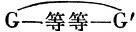
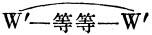
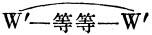
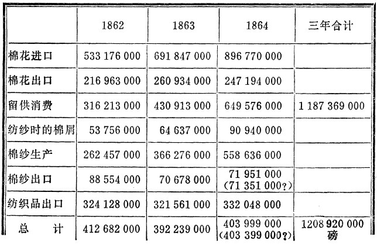

［1］第二册
[1]第二册
资本的流通过程
[2]第一章
资本的循环过程
（1）资本的形态变化
流通的第一形态 。
。
货币资本，生产资本，商品资本
一般说来，资本展现在我们面前的第一个形式是货币形式，货币进行循环Ｇ―Ｗ―Ｇ′，——货币转化为商品，商品再转化为数量更多的货币，买是为了以更高的价格去卖。从简单商品流通来看，这一过程仍旧是无法解释的（见第1册第2章3）。这个谜通过分析资本主义的生产过程才能解开。在这个过程中实际上不是简单地生产商品，而是生产这样的商品，它们的价值大于其生产各要素的价值，因而发生了价值增殖。通过随后进行的商品出售，包含在商品中的剩余价值不过取得货币形式。
例如，假定资本家最初预付540镑，即：400镑用来购买8000磅棉花，80镑用来补偿已被磨损的劳动资料，纱锭等等，60镑用于工资。假定剩余价值率是100％，而商品产品是8000磅棉纱；这8000磅棉纱的价值就等于480镑ｃ＋60镑ｖ＋60镑ｍ，(1)或600镑，比如说它是2000个十二小时工作日的货币表现，其中只有400花费在纺纱过程本身中，而200是剩余劳动。因此，如果每磅棉纱卖1先令6便士，或者，如果8000磅棉纱卖600镑，那么它们便是按自己的价值出售。实际上，如果资本家把1磅卖16+（1/5）便士，或把8000磅卖540镑，那么他便是向买者送了1/10的礼，相当于800磅棉纱，或者说比商品的价值便宜1/10销售商品。剩余价值是商品价值的一部分。因此，如果商品按其价值出售，那么同时也就是实现了剩余价值。已取得商品形式的（在这种情况下是棉纱）、已成为现实的200天无酬劳动，通过出卖棉纱不过取得货币形式。
或者，假定两个资本家互相直接出卖自己的商品（例如，棉纱和棉花）；在这种情况下货币只是充当计算货币。其次，假定在生产他们的商品的时候使用的劳动量相同，剥削程度也相同；在这种情况下，虽然双方都只是交换等价物，600镑棉纱的价值和600镑棉花的价值相交换，但Ａ先生和Ｂ先生都实现了60镑利润。在交易结束以后，Ａ拥有棉花形式上的剩余价值60镑，而不再是棉纱，另一个人Ｂ拥有棉纱形式上的剩余价值，而不再是棉花。他们手里的60镑剩余价值只是改变了使用形式，但它早在交换以前就已存在。无论在交换以前还是在交换以后，总价值1200镑都以棉纱和棉花的形式存在。但是交换以后也和交换以前一样，这一价值的1/10，120镑是剩余价值，也就是除剥削相应的劳动力外不需要两个资本家花费分文的那一价值的数额。劳动有酬或无酬——这种情况对于它创造价值的性质绝对没有任何关系。正因为这样，Ａ必然卖给Ｂ（而Ｂ也卖给Ａ）10/10的商品价值，而他们每人只支付了这个商品价值的9/10。
资本家实际上知道剩余价值或资本增殖的秘密。这一点可以由他在生产过程中的一切行为，由他疯狂追求剩余劳动得到证明。不过，他虽然不是德奥古利，却过着双重生活4：一种生活是在避开旁人视线的生产领域，在那里他是主人和统治者；另一种生活是在公开的市场上，在那里他以买者和卖者的身份出现，和自己相同的人打交道。这种双重生活在资本家的头脑里产生双重的神经冲动，从而产生双重的意识。他处在生产领域中的时候所懂得的东西，他在流通领域中已经不能懂得了。
我们的资本家由于在生产过程中占有无酬劳动，无可争辩地从540镑造出了600镑的价值，从而生产出60镑的剩余价值。预付的价值额只是由于丧失自己独立的价值形态才获得增殖的能力。
最初预付的540镑货币现在变成了价格为600镑的8000磅棉纱。这种价格只在观念上是棉纱价值的货币形式，它只有通过出售棉纱才能实现。虽然它在生产领域中已被生产出来，但是剩余价值象商品价值的其他组成部分一样，只有在流通领域中才能实现。促使货币贮藏者把商品的价值和价值形式混淆起来的那种错觉，也使资本家把剩余价值的创造和它转化为金或银混淆起来。
前面我们已经看到，(2)由于商品转化为货币对商品的单个卖者来说是一个困难的和充满危险的过程，这种混乱就巩固下来了。对于大量生产、因而必须大量出售的资本家来说，随着营业规模的扩大，危险也增加起来。如果他原先没有占有整个工人大军的剩余产品，那他现在就不需要出卖这种产品。而他恰恰相反，用他出卖这种产品所花费的劳动来解释对他人劳动产品的占有。不生产商品而只是盗窃商品的比耳·赛克斯还可以更加天花乱坠地谈论出售商品的危险。
其次，资本家通过出卖商品来实现从他的工人那里榨取来的剩余价值的多少，不仅随着市场价格的一般波动而改变。在商品市场上资本家同“资本家”相对立。狡猾对狡猾开始单独决斗。“海盗和海盗莫相残”，或者象3马屠朗·雷尼埃所翻译的那样：
假定我们的资本家不得不以590镑销售他那8000磅棉纱。虽然他生产了60镑剩余价值，但是他只实现50镑剩余价值。他的剩余产品的六分之一，即133+（1/3）磅，只不过是为他的伙伴致富而纺的。你们，不是为了你们自己6。反之，如果他能够高于商品的价值出卖商品，例如卖610镑，那么，他虽然只生产了60镑的剩余价值，但他实现了70镑的剩余价值。剩余价值的七分之一，即10镑，不是在他的生产领域中生长出来的，而可能是在邻人的生产领域中生长出来的。但是他亲手在赫斯贝里德姊妹的圣园里摘下了这些流通的金苹果，所以他认为做出了纯粹是海格立斯式的业绩7。在这两种情况下，在单个资本家生产的剩余价值和他出卖商品所实现的剩余价值之间出现了量的差别。在这种不正当交易的时候，不仅是剩余价值，甚至一部分资本价值也可能不付等价物而更换所有者。在那些得到资本价值的人的手里，这一部分不断形成剩余价值。由于市场变化无常，这种变化实际上只是改变已有的价值的分配，结果，剩余价值的来源就变得不清楚了，资本家本人最后再也不知道什么是什么了(3)。
Ｇ―Ｗ―Ｇ′循环使下述情况变得不可思议：在Ｇ―Ｗ行为即购买商品以后和Ｗ―Ｇ′行为即重新出卖商品以前实现的资本主义生产过程，始终是看不见的。这样，如果我们用字母Ｐ来表示这一生产过程，那么Ｇ―Ｗ―Ｇ′就变为。
第一个阶段：Ｇ―Ｗ。这是货币转化为资本的准备阶段（从第1册考察的观点来看）。
资本价值，即其使命是作为资本发挥职能的价值，它最初是以货币形式存在着的。它在这一形式上开始自己的运动。第一个过程，，是简单的流通行为，是买，是价值从货币形式转化为商品形式。但是这种形式上的行为作为资本生活中的一个阶段，具有职能上的一定内容。价值在货币上拥有自己的一般等价形式。因此，作为货币预付的资本价值，能够按照它要在其中发挥职能的生产领域的不同而转化为极不相同的商品。但是要作为资本发挥职能，货币就必须变为劳动过程的各要素，即生产资料（不管它们具有怎样的特殊形式）和劳动力（不管它们的用途如何）。货币必须变为不变资本和可变资本。生产过程的分析表明，购买劳动力本身的所有者在市场上出卖的劳动力，是资本主义生产的起源。
第二个阶段：Ｐ
当资本价值在第一个阶段中靠流通行为从货币转化为商品之后，也就是说，从物质的观点来看，转化为生产资料和劳动力，转化为形成产品和价值的各要素之后，接着第二阶段是这些商品的消费。劳动力通过它的活动表现即通过劳动本身被消费；生产资料被劳动消费，劳动把它们作为自己活动的物的要素，作为劳动材料和劳动资料消费掉。FN1同时，在这一过程中有更多的劳动力转入流动状态，也就是在进行这一过程时花费的劳动多于构成劳动力价值，从而构成它的价格或它的用货币支付的价值的劳动。因此，资本价值生涯中的这第二个阶段是它的生产消费，即生产过程，也就是资本主义生产过程。和发生单纯形式上的形态变化，即货币和商品互相换位，价值从货币形式转化为商品形式的第一个阶段相比，这第二个阶段包含着资本价值的实际形态变化，即双重的形态变化。一方面，发生了物质的形态变化。创造出新产品，创造出劳动过程熄灭在其中的一个成果。这种产品在实物形式上与在商品市场上购买的形成产品的各要素是不同的。例如，虽然小麦本身作为形成产品的要素加入小麦的生产，但是在生产小麦时形成产品的各要素中，不仅有小麦，而且还有肥料、机器等等，最后，还有劳动力。因此，即便是在产品本身以不同的方式出现在同样一些产品的生产资料中的情况下，它的实物形式也跟生产它的Ｘ种要素的实物形式不同。但是，第二，除了这种物质形态变化即作为劳动过程来看的生产过程的结果以外，资本价值发生了价值变化，这种变化是从价值形成过程来看的生产过程的结果。资本价值创造出超过以货币形式预付在购买商品——劳动力和生产资料——上的价值的余额，剩余价值在生产过程之前并不存在，它只是在商品生产过程中加到商品上的剩余劳动或无酬劳动。
物的因素——生产资料——在货币开始转化为资本时不是必须作为商品出现在市场上的。例如，厂房、机器等等是根据订货生产的。这里的货币在形式上起支付手段的作用（就是说，在交货以后立即实行支付的情况下也是如此）。另一方面，只是由于资本家的需求，现有的人们才能够作为劳动力活动——雇佣人员、儿童等等。
4商品简单的形态变化Ｗ―Ｇ―Ｗ完全是在流通领域范围内，也就是在商品市场上进行的FN2。商品一旦进入消费，它便退出流通。资本价值的情况则不同。资本价值的生产消费，或它在流通领域以外发挥职能，即在生产领域内发挥职能，构成资本价值循环的特殊生命阶段。因此，只有当资本价值在生产上被消费，从流通领域回到生产领域，在这里无论在实物形式上还是在价值量上都发生了实际形态变化以后，第二个行为，卖，才会补充第一个相反的行为，买。
资本价值在它的前两个阶段中的运动，自然是以资本家为媒介的。这种运动作为他自己的运动表现成这样：他起初作为流通的当事人，作为商品的买者——劳动力和生产资料的买者发挥职能。然后他从商品市场上消失，去作为商品生产者，请注意，作为资本主义商品生产者发挥职能。
第三个阶段： ，作为资本家的行为是卖，作为发挥职能的资本价值本身的过程是从商品形式再转化为货币形式。这纯粹是形式上的流通行为或纯粹是商品简单形态变化的阶段。诚然，第一个阶段，Ｇ―Ｗ，也是纯粹的流通行为或商品简单形态变化的环节，但是这个行为作为资本循环中的一个生活阶段，在物质上已被规定，具有特殊的内容——价值从它最初的货币形式转化为生产资料和劳动力，转化为资本主义生产过程的各要素。相反，Ｗ―Ｇ，生产过程在其中熄灭的那个商品的卖，不具备这种在物质上规定了的、职能上规定了的内容。
，作为资本家的行为是卖，作为发挥职能的资本价值本身的过程是从商品形式再转化为货币形式。这纯粹是形式上的流通行为或纯粹是商品简单形态变化的阶段。诚然，第一个阶段，Ｇ―Ｗ，也是纯粹的流通行为或商品简单形态变化的环节，但是这个行为作为资本循环中的一个生活阶段，在物质上已被规定，具有特殊的内容——价值从它最初的货币形式转化为生产资料和劳动力，转化为资本主义生产过程的各要素。相反，Ｗ―Ｇ，生产过程在其中熄灭的那个商品的卖，不具备这种在物质上规定了的、职能上规定了的内容。
资本主义商品生产者，也和任何其他商品生产者一样，必须出卖商品，把商品从它的实物形式变成它的等价形式，或者说变成货币形式。除了这种形式的转化以外，卖不具有任何其他内容。Ｇ―Ｗ则相反，不只是买，不只是货币形式变成商品形式，而且是货币形式变成特殊的一定性质的商品。
当我们孤立地考察Ｗ―Ｇ本身时，情况便是这样。但是，如果同循环的上一阶段联系起来考察，那它就是另一种样子。最初以货币形式存在的资本价值，上述例子中是540镑，在第一个阶段Ｇ―Ｗ中变成价格为540镑的商品，即生产资料和劳动力。这些商品在生产过程中，即在吸取剩余劳动的过程中孕育着剩余价值。产品——8000磅棉纱——的价值因此等于构成产品要素的最初的价值540镑＋剩余价值60镑，即600镑。可见，离开生产过程的商品Ｗ比最初进入生产过程的那些商品Ｗ具有更高的价值。因此，我们用Ｗ′来表示这种商品。如果Ｗ′按其价值出卖，那么它便卖600镑，即540镑最初的资本价值＋60镑这一资本价值的增殖额。退出生产过程的商品孕含着剩余价值，即在生产过程中转入流动状态的无酬劳动所体现的价值增殖额。和最初的预付资本价值相比，这个商品是增大的价值，它等于最初的资本价值＋它的增殖额。但是这一增大的价值现在在商品的形式上作为新形式的商品例如棉纱的价值而存在。它现在只在等于540镑＋60镑的棉纱价格上具有独立的形式，也就是它只具有观念上的货币形式。通过出卖商品，Ｗ′―Ｇ′，这一价格得到实现，即商品价值从商品形式再变成货币形式。但是，由于商品价格的这种实现，不仅最初的资本价值，540镑的Ｗ或Ｇ，获得了它在Ｇ―Ｗ行为中失去的它最初的货币形式，而且在生产过程中新生产的和表现在商品价格上的剩余价值60镑也转化为60镑货币。
因此，被看作发挥职能的资本价值的一个生活阶段的Ｗ′―Ｇ′行为，决不单纯是卖。它是预付在生产商品上的资本价值＋在生产中加进资本价值的剩余价值的实现。这是孕含着剩余价值的商品转化为金或银，因此，这既是预付资本价值返回到它最初的货币形式，也是剩余价值在货币上的实现。从一般形式来考察的卖也是商品价格的实现，或它们的价值表现在货币形式上。但是，由于表现在商品价格上的价值在这里等于最初的资本价值＋剩余价值，那么卖也就是这样一个价格的实现，它等于最初的资本价值＋新生产出来的超过这一资本价值的余额或剩余价值。因此，如果说Ｗ′―Ｇ′行为不象Ｇ―Ｗ那样表现为物质上一定的行为（从而表现为资本价值生活中特殊的职能行为），即表现为货币转化成它作为资本发挥职能所预先决定的特殊使用形式（生产资料和劳动力），那么相反，它对发挥职能的资本价值的价值量来说具有特殊的规定性。这不只是包含在商品价格中的资本价值的实现，而且也是和它结合在一起的剩余价值的实现——剩余价值的实现。这种规定性恰恰只对于资本家或发挥职能的资本价值来说才存在，它只存在于资本家生活的普遍联系中，或这一生活的不同阶段的彼此关系中。
对买者来说，Ｗ′就是Ｗ，就是一定价值的商品。例如，对于8000磅棉纱的买者来说，棉纱的卖者出卖这8000磅是补偿他的资本，还是他愿意把卖得的货币作为收入来消费，完全是无关紧要的，就象对于他来说，在纺纱过程中把120镑加到480镑生产资料上的那400个工作日，是否在其中有200代表有酬劳动，200代表无酬劳动，也就是说，它们是全部还是只有一部分代表工人的价值，也完全是无关紧要的一样。他必须支付的，5是这8000磅棉纱的价值，即480镑（已消费的生产资料的价值）＋代表400天剩余劳动的120镑，也就是600镑。对于棉纱的买者来说，Ｗ′―Ｇ′＝Ｇ―Ｗ，购买商品，仅此而已。518Ｗ′―Ｇ′，也和Ｇ―Ｗ一样，都是流通的简单行为。买（Ｇ―Ｗ）比卖（Ｗ―Ｇ）更容易，这种差别在考察简单商品流通的时候已经分析过了。这种差别产生于货币和商品之间的差别。但是，作为独立的资本循环的两个阶段，Ｇ―Ｗ和Ｗ′―Ｇ′有着本质的差别，因为Ｇ―Ｗ对于货币资本转化为生产资本，从而对于预付价值开始增殖来说，是必要的过程。从资本家的观点来看，这是不可避免的不幸。相反，在Ｗ′―Ｇ′行为中，问题就不仅是预付资本从它的商品形式再转化为它的货币形式了。这同时也是剩余价值的实现。资本家在这里不象是在Ｇ―Ｗ行为中那样进行预付；他是获得，并且获得的比它预付的多。因此，他买（Ｇ―Ｗ）的时候没有卖（Ｗ′―Ｇ′）的时候热情高，而卖的愿望比买的愿望更强烈这一事实，并非产生于Ｗ―Ｇ是一般商品流通的一环，而是产生于它是独立的资本循环中的一环。18
5可见，资本循环，一方面和一般商品流通结合在一起，加入其中，构成它的一部分。另一方面，它构成资本价值自己的独立运动（对资本家而言，资本家使用自己的货币，让它们发挥资本的职能），这一运动部分地在一般商品流通的范围内进行，部分地在一般商品流通的范围外进行。
这一运动的独立性表现在：（1）流通的两段，Ｇ―Ｗ和Ｗ′―Ｇ′，买和卖，作为资本运动的阶段在职能上具有一定的性质。Ｇ―Ｗ，买，在物质上是被规定了的。货币转化成的或被购买的那些商品必须具备特殊的使用形式。一方面，它们必须充当生产资料，另一方面，必须包括劳动力。如果货币所有者不能购买劳动力，如果劳动力不被它自己的所有者拿去作为商品出卖，那么货币就根本不可能转化为资本，或者说，价值就根本不可能作为资本价值发挥职能。另一方面，Ｗ′―Ｇ′这一段流通作为一般商品流通的行为（换句话说，对商品的买者来说是单纯的买，或者从商品所有者方面来说是卖），作为资本价值运动中的一个生活阶段，不仅是预付在商品生产上的资本价值的实现，而且也是生产过程中新加到商品上的剩余价值的实现。（2）资本循环不仅包括两个属于流通领域的简单商品形态变化的阶段，Ｇ―Ｗ和Ｗ―Ｇ，买和卖。它还包括流通领域范围以外的生产过程Ｐ，也就是商品——生产资料和劳动力——的生产消费，这些商品的形式是最初的资本价值Ｇ通过流通行为转化成的。简单的商品形态变化Ｗ―Ｇ―Ｗ完全是在流通领域范围内进行的，并且仅由两个流通行为组成。商品的消费并不涉及这种形式变换。商品一旦转化为货币并从货币再转化为商品，商品便退出流通而进入消费。（3）最后，资本价值在一般商品流通范围内所实现的循环的独立性表现在这一点上：资本价值经过一系列部分地是形式上的，部分地是实际上的形态变化以后，它重新返回到自己最初的货币形式上来——这些货币只发生了数量上的变化；或者表现在这一点上：资本家起初投入流通的货币最后终于又流回到他那里——即流回到他那里时已经是增殖了的货币。资本价值开始自己生活的第一个形式，货币形式，也是运动结束时的最后形式，或者说，资本家预付的货币再流回到他那里即流回到出发点，这种情况象在考察Ｇ―Ｗ―Ｇ′时已经指出的那样（第1册第2章FN3），是对买的行为进行补充的那个卖的行为的必然结果。由于购买商品，货币投入流通，而商品则退出流通。由于随后补充的卖，商品又投入流通，而货币则退出流通，或投入流通的货币从流通中流回到它们的出发点。货币向它们的出发点的回流（或者说，资本价值再转化为它最初的货币形式），是对购买商品进行补充的出卖商品的必然结果。这一运动无论如何不会由于购买商品之后和重新出卖商品之前所发生的停顿而改变，在停顿时期，买来的商品由于进行生产消费或通过生产过程，既改变了自己的实物形式，也改变了自己的价值。商品买来以后都要重新出卖，而不管它的实物形式或它的价值怎样变化。因此，货币一定会发生向它们的出发点的回流，或者说，商品形式再转化为最初的货币形式。至于除此之外流回的货币数额多于最初预付的数额，它增加了剩余价值量，现在要解释这一点是很简单的。如果说资本家作为卖者从流通中得到的货币多于他作为买者投入流通的货币，那只是由于他再投入流通的商品Ｗ′比通过买从流通中取出的商品Ｗ具有更大的价值。归根到底，他从流通中得到的货币所以多于最初投入流通的货币，只是因为他作为卖者投入流通的商品的价值大于他作为买者从流通中取出的商品的价值。
的确，重要的是应当指出，资本循环包括商品Ｗ的即货币在第一阶段转化成的那些商品的消费，这也就是它们的生产消费或生产过程。但是，这个循环并不直接包括退出生产过程，然后又被投入流通的商品Ｗ′的消费，而只包括它的出卖，包括它再转化为货币。诚然，退出生产过程的商品必须是使用价值，有用物，它只有在下述情况下才可能成为这样的有用物：它的实物形式使它能够或者充当生产资料或享受资料，或者充当生产消费或个人消费资料，而尽可能是两者兼而有之。归根到底它是供生产消费或个人消费用的，归根到底购买它只是为了以这种或那种方式消费掉。但是，它的消费不包括在资本价值的循环中，这种资本价值在流通中由于出卖而再次抛弃它在生产过程中获得的商品形式。商品，例如棉纱，一经出卖，表现在棉纱上的资本价值的循环就能重新开始，而不管这些棉纱发生了什么变化。因此，只要商品出卖没有任何困难，在资本主义生产者看来一切都是正常的。他所体现的资本价值的循环没有中断。他的买者，商人，与此同时可以在世界的这一或那一地区把未卖出的棉纱囤积起来（保存在仓库里），并在或长或短的时间里继续购买新的棉纱，他们这样做或者是用自己的货币，或者尤其常见的是用借来的货币，即他通过信贷能加以支配的货币。显然，归根到底商品（棉纱）必须卖给购买它的买主，才能进行消费，即进行生产消费或个人消费。凡是最后不把商品提供给消费者（生产消费者或个人消费者）的一切买和卖的行为，都只是暂时的行为，不是最终的行为。因此，买者——这里指的不只是从生产者那里购买商品的第一个买者，而且是在商品卖给最终消费者以前经手的那一系列买者——归根到底必须销售商品。如果后来弄明白，这种商品或者不可能出售，或者只能降价出售，那么最后对生产者的反作用就变得明显了。那时，我们会看到在每次危机中都会定期重复的现象经常出现在国会的发言里，出现在货币市场的出版物里。这些言词充满信心地说生产是“健康的”，可是突然间，由于各种偶然性和商业上的冒险行为而变得“不健康”了。(4)
6资本价值通过它在自己的运动中经历的三个不同的阶段而创造出不同的形式：货币资本形式、生产资本形式和商品资本形式。同一资本价值按照它处于自己循环的某一阶段和完成某一职能的情况，而轮流采取货币资本、生产资本和商品资本的形式。这些不同的形式是资本在其循环中所经历的各种形态变化。
（1）货币资本
对于一般商品流通来说，货币资本只不过是货币。这些货币只有作为过程中的资本价值的特殊的、职能上一定的形式中的一种，即只有对于资本在一般流通范围内所完成的独立循环来说，才是货币资本。因此，在流通的每一单个行为中，货币资本也只是完成货币职能中的某一种职能，它只是充当购买手段，支付手段等等。在上述例子中，资本家预付540镑，所以代表1600个十二小时工作日的价值便以货币形式的资本，以540镑的形式，开始自己的循环。在这540镑中，60镑用于购买劳动力。对于540镑必须作为资本价值完成的循环来说，这60镑不只是货币资本的一部分。在资本家手里，它是货币资本的可变部分，即其中用来变为活劳动力的部分。但是在市场上，在一般商品流通的范围内，这些货币对于资本家本身来说只完成一定的职能，它们充当他的购买手段或商品的支付手段，在当前的情况下是劳动力的支付手段，此外，同一60镑一旦转到工人手里，便失去了资本的性质。对工人来说，它们只是商品形态变化Ｗ―Ｇ―Ｗ中商品的正在消失的货币形式。工人为60镑而出卖劳动力，其目的是用这60镑购买生活资料。因此，这60镑只是作为流通手段发挥职能。
在流通的图式中，资本价值的开始形式和最终形式——即开始自身增殖的资本价值形式和已经完成这种增殖的资本价值形式——是货币资本形式。540镑价值又以其货币形式存在，但是，这540镑作为货币资本，即作为最初预付的货币额对60镑剩余价值的关系是对自己成果的关系。由于作为货币资本的540镑和作为它的金价值产品的60镑之间存在差别，资本家便能够例如吃掉这60镑，而把540镑作为资本价值重新投入循环。但是在这里，如果我们考察一般商品流通中货币流回到出发点的那一阶段，即Ｗ′―Ｇ′，考察在生产过程中得到的商品8000磅棉纱的出卖，那么货币无论是在卖者即棉纱的资本主义生产者手里，还是在买者手里，都只是起货币的作用。在每次出卖的时候，货币都充当买者的购买手段或支付手段，而对于卖者来说，它们充当他的商品的转化形式，货币形态。
在考察货币的时候我们已经看到，它们的形式之一是贮藏货币形式。如果这种贮藏货币具有职能上的作用，那便是充当购买手段或支付手段的准备金。相反，如果货币作为财富最终的绝对的形式一直保存下来，那么贮藏货币便只是金银的毫无意义地积累起来的储备。如果资本家不得不使他的一部分货币资本发挥准备金的作用，那么这种准备金正是处于贮藏货币的一定职能形式上的货币，即为了将来的购买或支付所必需的货币储备。这种货币储备只有作为过程中的资本价值时而采取、时而抛弃的形式和职能之一，才是后备货币资本。资本家远不赞同货币贮藏者的幻想。因此，他没有以贮藏货币形式保存自己货币的宿愿。但是他往往遇到这样的情况：商品流通提供给他的货币，或者可能是他在流通中进行其他投机而得到的货币，对他来说既不需要直接用作购买手段或支付手段，也不需要用来恢复他的准备金，于是，这些货币便停滞在他那里成为贮藏货币，成为不执行任何职能的货币。这些货币对他本人以及对一般的流通来说是单纯的贮藏货币——简直是货币贮藏者握在手心里的贮藏货币。这些贮藏货币只是剩余价值变成的金，这种剩余价值只要达到一定的数额，便会作为追加资本起作用，因为我们记得，决不是任何数量的货币都能作为资本起作用。或者，它可能是最初预付的并从流通中以货币形式返回的资本价值的一部分，不过这一部分由于市场条件不利，不能再直接转入流动状态，所以它停滞在贮藏货币的形式上仅仅表明它的职能被中断等等。无论如何，这种贮藏货币都是单纯的贮藏货币，只有在资本的特殊循环中占职能上的一定地位以后，才能获得货币资本的用途。贮藏货币形式上的现有货币资本是潜在的货币资本，它或者还没有执行自己的职能，或者执行的职能被中断。
从上面的叙述中可以得出结论：如果说货币资本作为过程中的资本价值在自己的循环中时而采取、时而又抛弃的特殊的职能上一定的形式之一（或者也可以说，这种资本价值在自己的一系列形态变化中所采取的形式之一），由于本身一定的性质而不同于对它进行补充的其他形式，那么这些性质并不是由于货币资本是资本，而是由于资本在这里具有货币形式，——可见，也就是具有货币所特有的与众不同的性质。例如，540镑不在纺纱生产中，也能在任何其他生产部门中自行增殖，因为象货币本身一样，资本家也是万能先生。或者，如果第一个循环结束时资本返回到它的货币形式上，7它能够全部或部分地转化为其他实物形式的生产资本。相反，已经转化为一定生产要素的资本也只能在以这些要素为条件的生产过程中起作用，而商品资本，即这8000磅的棉纱，只要还没有卖出去或再转化为货币，就既不能在同一生产部门中，也不能在其他生产部门中作为资本重新发挥职能。货币资本转化的能力——这种能力对于节省社会资本在不同的投资领域中不断变化的分配来说起着很大的作用——依然不是产生于它作为资本的性质，而是产生于它作为货币的性质。货币作为商品的一般等价形式具有直接交换一切商品的性质，从而具有转化为任何使用价值的能力，而不论所得到的使用价值是否已经是上市的商品，还是按照订货生产的。
我们来看另一个例子：我们的资本家发现他的资本在国外比在本国增殖得快，——而我们的资本家也和货币本身一样，是世界主义者。现在产生了一个问题：资本以什么形式输往国外呢？作为商品资本吗？但是别国的边界上可能有海关人员和异教徒守在那里禁止商品输入。或者国内某些商品的生产比国外贵。那么它们便不适于出口。至于其他商品，国外可能已经充斥，它们的价格因此低于正常的水平，等等。在这样的商品市场行情下，最有利和最正确的做法，是把渴望旅行的资本在货币形式上作为货币资本送出去。但是为什么呢？不是因为货币资本是资本，而是因为它是货币形式上的资本，货币现在也起世界货币的作用。这里有意义的是货币和商品之间的区别，而不是货币资本和商品资本之间的区别。成为资本——不如说这是它们共同的性质，在货币或商品形态上成为资本——是它们的特点。当代的政治经济学还能得到的唯一慰藉，就是它高于货币主义和重商主义的谬误。因此，它小心翼翼地掩盖货币同商品的差别，同样顽强地企图用货币资本充当资本时的性质来解释只是由它的货币性质所产生的东西。(5)。
货币资本不是独立的资本形式；它只是过程中的资本价值在其循环或形态变化的系列中所采取的特殊形式之一。因此，不能把它和独立的资本形式混为一谈，例如，和生息资本混为一谈。(6)
[（2）生产资本]
由于流通的第一个行为Ｇ―Ｗ，资本抛弃它的货币形式而转化为生产的各要素。它从货币资本转化为生产资本。它具有这样一种形式，在这种形式中它的职能就是资本主义生产过程本身。它的这种形式和这种形式的职能属于生产领域，而它的货币资本和商品资本的形态和职能属于流通领域。在这种形式上它实现资本主义生产的最终目的，它最隐秘的过程是价值增殖或生产剩余价值，流通行为Ｇ―Ｗ对于这个过程只具有前奏的性质，这个过程的结果由于流通行为Ｗ′―Ｇ′而只转化为银或金。最后，资本在流通领域只改变自己的货币和商品形式以及自己的人格化，同样，资本家在对和他相同的其他买者或卖者的关系上只表现为卖者或买者，虽然在第一册里已经指出，作为买者的资本家和作为劳动力卖者的工人之间的平等是从流通过程中产生的纯粹假象(7)。由于活劳动力加到劳动过程的物的要素上，价值即过去的、物化的死劳动变为“资本，变为自行增殖的价值，变为一个有灵性的怪物，它用好象害了相思病’的劲头开始去‘劳动’”（第1册第161页FN4）资本主义生产过程同时是剥削劳动力的过程。“生产资本”这个术语很好地反映了在这种生产方式下劳动生产率变为劳动要素的生产率，创造价值的活动变为现有的、已存在的价值的主动性，活劳动变为死劳动的血液。工人从属于劳动产品，创造价值的力量从属于这个价值本身，发挥职能的劳动力作为一部分预付资本价值借以存在和发挥职能的简单形式而存在，而另一部分预付资本价值由劳动的物的要素和现成的价值构成，——所有这一切是以资本家（资本的人格化）对工人的强制和统治关系（或在这方面的表现）为媒介的，正象货币转化为商品等等是以资本家的买或卖的行为为媒介一样。作为这样的关系，资本是生产的，因为它不仅总是把剩余劳动转入流动状态，而且还决定了资本主义生产过程的特殊形式，正是通过这些形式把尽可能多的剩余劳动转入流动状态。至于生产资本，这里应当指出，资本价值在这一职能上拥有它在流通领域中所不能得到的潜力。除了资本价值从流通领域中获得的生产资料和劳动力以外，资本价值在这里把不是劳动产品、因而不是价值的自然物和自然力加在自己身上，同样也把生产过程本身的组织中所产生的社会劳动生产力加在自己身上（第1册第6章ｂFN5）。
资本所以成为生产资本，是因为价值把形成价值的力量加在自己身上，是因为生产资料掌握了劳动力，而不是劳动力掌握了生产资料。
在第一册中（第3章1和2FN6），我们记得，生产资料一方面构成劳动过程的物的因素，构成不变资本的物质形态；另一方面，生产资料在生产过程中——从这一过程是价值增殖过程来说——在对正在起作用的劳动力的关系上是作为吸收劳动的手段发挥职能的。
8政治经济学满足于朴素的外观，从简单劳动过程即从与任何社会形式无关的自然过程来考察资本主义生产过程。它根据这一点说明生产资本是生产资料，因为它们本身是过去劳动的产品，而不是没有劳动的协助就存在的自然物。如果读一下下面这样的话：
“生产资本是以某种方式和工业结合在一起、处在增殖过程中的东西”（弗·威兰德[《政治经济学原理》1843年波士顿版]第35页），
那就只能意味着：生产资本是处在劳动过程中的生产资料。但是，这种蠢话并不象想象的那样天真。这种混乱是要把下列东西偷运进来：承认来自自然界的生产资料是资本，从而承认来自自然界的劳动过程是资本主义的，也就是说，所谓来自自然界的工人引起资本家的出现。如果事先假定工人是雇佣工人，从而也事先假定有资本家，那么这样说就更容易了。在这种情况下，小心谨慎的和字斟句酌的“思想家”，例如约翰·斯图亚特·穆勒先生，可能说明“生产资本”这种说法严格地讲只是形象的说法，因为严格地讲，只有劳动，而非生产资料，才是生产的。资本的生产性是词藻华丽的说法吗？穆勒先生可以同样宣称奴隶制和农奴制的生产性是词藻华丽的说法！但是，如果他真相信资产阶级政治经济学的论断，把生产资本只理解为生产资料，那么他的批评就依然停留在幼稚的水平上。他应当这样讲：首先，“资本”这个词在这里是生产资料的多余的简单的名称。因此，应当打倒它！经过这样剪裁以后，问题就不是关于生产资料是不是生产资本，而是生产资料是不是生产的问题了。穆勒先生达到这一点以后，就面临着接触科学问题的危险，即：产品生产过程中或价值生产过程中的生产资料是不是生产的？他没有谈这一点，而是企图向自己和别人解释说，生产资料，例如皮革、松香和锥子这样一些东西，实际上只有在人们借助于它们才能劳动的情况下，才充当生产资料，即充当劳动材料或劳动资料。他还能够作出深思熟虑的结论说，谷物和9肉如果不是被吃掉，便不是消费品。难怪约翰·斯图亚特·穆勒先生被列入七大贤人之中12！为了进行比较，我们不妨看看梅克伦堡的地主冯·杜能的说法：
“如果我们回头来看看我们最初研究时曾经指出的：（1）资本本身是死的，只是由于人的活动才有用；（2）资本本身不过是人的劳动的产物……那么似乎完全不能理解的是，人怎么会落入他自己的产物——资本——的统治下，并且从属于这个产物；然而，因为实际上情况确实如此，所以不禁要问：工人作为资本的创造者，怎么会由资本的主人变为资本的奴隶呢？”（冯·杜能《孤立国家》1863年罗斯托克版[第2部]第2编第5、6页）
杜能在这里是从政治经济学的一个错误前提出发的，即认为生产资料一开始就是资本，因此资本成了工人的主人。他不可能懂得，物，生产资料，只有在一定的社会生产关系下才能变成资本。因此，他不应当问工人怎样会落入资本的统治下，而是应当问生产资料即已经存在的价值由于什么原因才变成资本？不过，尽管问题的表述是错误的，问题的解决几乎是可笑的，但是提出问题本身就向我们表明，为什么冯·杜能在德国教授们编的经济著作中总是一个“孤独的思想家”。使他成为这个社会里的孤独的人的，不是捷尔洛夫这个名字13，而是思维方式。9
[（3）商品资本]
8生产过程熄灭在产品中。成品被排出生产领域，进入流通领域。这是供出卖的产品，或商品。这样，资本从生产资本转化为商品资本。这不仅是最初预付的资本价值，而且是在生产过程中充实了剩余价值的、现在以商品形式存在的、因而作为商品资本存在的资本价值。商品的唯一职能是商品的出卖，是商品转化为货币。这种商品资本的转化，对于最初的预付资本价值来说是回归，而对于它所增加的剩余价值来说则是首次转化为货币。
可能有这种情况：资本主义生产者，例如租地农场主，把一部分产品直接用于他个人的消费。他这样在实物形式的剩余产品中消费的东西，自然不会转化为响当当的铸币，也不会作为商品执行职能。另一种场合，即一部分产品作为生产资料再加入它作为产品退出的那同一个过程，就更为重要得多：例如，煤加入采煤过程，小麦加入小麦的种植，等等。由生产者自己进行生产消费的这一部分产品的价值，在资本家的簿记中作为计算货币存在，但它并不实际转化为货币。这一部分产品仍然是资本的组成部分，不过是生产资本形式上的资本的组成部分，而不是商品资本形式上的资本的组成部分。如果说以前曾经指出过，除了产品，从而除了商品以外，加入生产过程的还有其他要素，那么在这里我们看到，并不是加入生产过程的一切产品都退出流通过程，并不是一切产品以前都作为商品流通。
资本主义生产者也和任何其他商品生产者一样，可以为了等待更好的市场行情而不把商品运往市场。商品迟早必须脱手。这样暂时存放起来的商品是潜在的商品资本，是职能有意被中断的商品资本。相反，供出卖的商品是否必须在它准备出卖的阶段上停滞或长或短的一段时间，这一点根本不会改变如下的事实：它处在流通领域，因而它所代表的资本价值是作为商品资本发挥职能。例如，商品尽管仍未卖出，但在这一职能上仍会影响市场价格。
初看起来，似乎流通形式的资本两次作为商品资本发挥职能，一次在Ｇ―Ｗ中，在买的时候作为商品发挥职能，第二次在Ｗ′―Ｇ′中，在卖的时候作为Ｗ′发挥职能。首先应当记住，Ｇ―Ｗ中的Ｗ有一部分是由劳动力构成的。在工人卖出自己的劳动力之前，它是商品，但决不是商品资本。他一旦把劳动力出卖给资本家，它便必然作为生产资本的可变成分起作用。只有奴隶的劳动力才可能具有商品资本的形式。其次，至于资本家用自己的货币转化成的用作生产资料的其他商品，如原料，辅助物质和劳动资料，那么，它们在卖者手里决不一定是严格意义上的商品资本。它们可能是独立劳动者、奴隶等等的产品。在流通领域中，极不相同的生产方式交织在一起，它们的产品都表现为同样的商品形式。但是，因为我们在这里关心的只是资本的流通形式，所以有利的作法是，一方面完全撇开对外贸易，另一方面假定资本在这里支配了国内的全部生产，也就是说，全部商品产品同时也是商品资本。因此，在这种前提条件下，Ｇ―Ｗ中的Ｗ对生产资料的卖者来说在任何情况下都是商品资本。它们是孕含着剩余价值的产品，卖者必须把它们变为货币形式。但是它们对买者来说不是商品资本，相反，买者购买它们的时候是想把自己的资本价值从货币形式变为消费形式，在这种场合就是变为生产资本的形式。只要商品Ｗ在卖者手里，它们就还不是这样一种资本价值的存在形式，这种资本价值通过这些商品的购买而开始自己的循环。它们一经转入买者手里，即进入他的资本的循环，它们便成为他的生产资本的存在形式，说得确切一些，成为他的生产资本的不变部分的存在形式，而不管他是否把它们立即投入生产过程，还是留作供以后的生产过程用的储备。商品资本从表面上看两次出现在流通中，这一事实实际上只是反映了9在商品的简单形态变化Ｗ―Ｇ―Ｗ中见到的现象。买，Ｇ―Ｗ，在这里对买者来说是商品的第二个形态变化，是商品从货币形式再转化为消费形式，但是对卖者来说是第一个形态变化，是卖，Ｗ―Ｇ，是从商品形式转化为货币形式。同样，在资本的这一循环中，对买者来说Ｇ―Ｗ是第一个形态变化，是货币资本转化为生产资本，但是对卖者来说Ｗ′―Ｇ′是最后一个形态变化，是商品资本的实现。在这里，同一些物在一个资本的循环中作为商品资本执行职能，随后在另一个资本的循环中作为生产资本执行职能。“商品资本”，“生产资本”等的规定性随这些物在资本价值的循环中所处的位置（和相应职能）的变化而变化。
商品资本之所以是过程中的资本价值在循环的一定阶段上所采取的独特形式，只是由于资本采取它必须作为资本执行职能的那种形态。但是，商品的唯一职能是它的出卖或它转化为货币。
资本的形态变化：
Ｇ―Ｗ。例如，代表1600个工作日的价值，在其货币形式上，比如说在540镑的形式上，开始运动。这个价值必须作为资本，即作为自行增殖的价值执行职能。因此，它就其使命来说，本身已经是资本价值或资本。第一个阶段，或第一个过程，属于一般商品流通的范围。作为流通的阶段，它是简单的流通行为，是商品形态变化的一个环节，是货币转化为商品，是买。但是，作为过程中的资本价值循环的第一个阶段，这种买在物质上已被规定，即用货币交换的或用货币购买的那种商品的特殊性质，已由执行资本职能的货币性质所规定。作为资本循环的第一个阶段，流通的这一简单行为，买，或形式上的形态变化Ｇ―Ｗ，货币转化为商品，从货币形式转化为商品形式，同时是预付资本价值开始自行增殖的过程，是货币转化为劳动力和生产资料，例如棉花，纱锭等等，以及纺纱工人；资本价值的第一个形态变化，同时是它在流通过程中完成的循环的第一个行为，因而是流通行为。流通的这第一个行为，或这第一个形态变化，是由资本价值在货币形态上完成的，或作为货币资本完成的。通过这第一个形态变化本身，资本价值转化为各生产要素的形态，转化为生产资料和劳动力。
Ｐ。现在资本价值从它的第一个形态——货币资本的形态——转化为生产资本的形态。它采取另一种形式，或处于另一种状态，并且在这种形式上完成另一种职能。生产资本的职能是资本主义生产过程。这是过程中的资本价值的实际形态变化。一方面，各生产要素——棉花、纱锭、纺纱工人的劳动——变成新产品，变成棉纱。另一方面，资本价值自行增殖，也就是说，生产资料的预付价值有一部分保存下来，有一部分通过新生产的价值来补偿劳动力的预付价值，最后，加进了剩余价值。各生产要素的价值是540镑。产品即棉纱的价值等于540镑预付资本价值＋60镑在生产过程中加进的剩余价值，即等于600镑。在产品中，生产过程，同时也是职能，也是资本价值作为生产资本的状态，全都消失了。棉纱不可能再在生产过程中发挥作用。它必须作为商品出卖，或者说，在这种商品从流通领域即从它的第一个阶段进入生产领域以后，进入它的第二个阶段的发挥职能的领域以后，再进入流通领域。或者，如果从资本家的主观行为即充当资本价值客观运动的媒介的那种行为来看，那么，资本家起初作为商品的买者（生产资料和劳动力的买者）出现在市场上，尔后离开市场，充当资本主义的商品生产者，其后，又离开生产领域，重新在市场上充当在生产过程中改变了形式和价值的那种商品的卖者。
10Ｗ′―Ｇ′。资本循环的第三个或最后一个阶段和它的第三个或最后一个形态变化。
Ｗ′―Ｇ′——简单的流通行为，卖，或商品简单形态变化的一个阶段，商品形式到货币形式的转化。价格为600镑的棉纱转化为600镑的货币价值。本身被看作属于一般商品形态变化的这一过程Ｗ′―Ｇ′，只不过是Ｗ―Ｇ。但是，作为资本价值独立循环中的一段，即和它以前的各阶段相比，Ｗ变成了Ｗ′。各生产要素Ｗ的价格是540镑，现在Ｗ具有600镑的价格，因此，和Ｗ相比是Ｗ′。同样和Ｇ＝540镑相比，Ｇ′＝600镑。可见，在这里商品的职能既是预付在商品生产上的资本价值540镑再转化为货币形式，又是加到商品上的剩余价值60镑转化为货币。因此，资本价值在自己的最后阶段作为商品资本执行职能。通过商品资本的职能，即通过Ｗ―Ｇ的流通行为，通过从商品形式转化为货币形式，资本也就回到它最初的540镑货币资本的形式，不过现在它和60镑的关系，是自行增殖的资本和自己的成果的关系，和它所产生的剩余价值的关系。10
11所以，每一单个资本一方面是总的商品流通两个本身对立的部分Ｇ―Ｗ和Ｗ′―Ｇ′的因素（要素），它在其中或是充当货币，或是充当商品，并且和商品界的一系列形态变化交织在一起。另一方面，在总的流通范围内，它完成自己的独立循环，生产领域是这一循环的暂时阶段，在这一循环中，它在总的流通范围内时而采取时而抛弃的形式，只是过程中的资本价值的职能上一定的形式，并且在这一循环中，它以离开起点时的形式回到自己的起点。在它自己的包含着它在生产过程中的实际形态变化的这一循环的范围内，它同时改变了自己的价值量。它不只是作为货币价值返回，而且是作为已经增殖的、已经增加了的货币价值返回。
诚然，形式上的循环，表现为流通过程和生产过程的统一，但同时，生产过程在这里只表现为流通过程的媒介，表现为流通过程的暂时阶段，它处在流通过程的两个半段Ｇ―Ｗ和Ｗ′―Ｇ′之间。运动的起点形式和终点形式是货币，是独立的价值形态，是价值的等价形式。因此，撇开媒介环节来看的资本价值的总过程，便是Ｇ―Ｇ′，便是预付货币的流通，这些货币从这一流通中出来的时候已经增殖，——是孵出货币的货币。
我们立刻就会看出，这一形式是单个资本运动的真正形式，单个资本起初作为货币进入市场，又作为货币离开市场——不管资本家是否真正停止营业，或者他只是把他的资本从一个生产部门抽出来投入另一生产部门。此外，可以看出，一部分过程中的资本价值经常以Ｇ―Ｇ′的形式流通。例如，资本家的确经常把货币花费在购买[劳动力上]，或支付在工资上，还通过出卖工人的价值产品经常从流通中取出更多的货币，以便不断地重新开始同一过程。
正由于价值的货币形态是可以摸得着的表现形式，那么流通形式，即起点和终点都是真正的货币，并归结为Ｇ―Ｇ′，归结为赚钱的流通形式，最明显不过地反映了资本主义生产的动因和起决定作用的精神。生产过程在这里只表现为赚钱的必要媒介，表现为确实不可避免的不幸。因此，所有资本主义生产方式的国家都周期性地盛行投机的狂热，它们想不经过非常麻烦的生产过程而赚钱(8)。
但是，如果过程中的资本价值的这种流通形态不是确定为特殊的表现形式，而是确定为它的循环的普遍的和唯一的形式，那么它的空幻性质一眼就可以看出来了。作为普遍的形式，这种循环是周而复始的圆圈，在其中，货币资本形式、生产资本形式和商品资本形式不断地消失，又不断重现出来。在这一周转本身中，资本从货币形式到货币形式的回流，不过是不断重新消失的回流，任何其他的过渡点，都同样可以被定为出发点和回归点。资本价值恰恰在它的货币形态上被确定为出发点和回归点，这一事实不过是表明了资本家的主观目标。但是，这一循环形式自身指明了另一种形式是自己真正的、但躲在背后的基础。它的出发点是货币，是商品的转化形式。要使它从这种形态转化为生产资本，不仅要以经常存在生产资料为前提，而且还要以经常存在雇佣工人为前提。但是，正如我们在第一册里已经看到的FN7，工人不断以雇佣工人的身分出现在商品市场上，因为资本主义生产过程把他不断地以这种身分抛向市场。可见，流通的形式12以资本主义生产过程的连续性为前提，从而以循环的形式为前提，在循环的形式中生产资本及其职能，资本主义生产过程，是出发点，也是回归点(9)。
孤立地来看，流通形式本身是货币贮藏的合理形式，从而是货币体系即重商主义体系的合理形式。尽管有现代政治经济学的启蒙宣传，这一体系依然在实践家的头脑中，特别是在商人的头脑中，占统治地位。(10)12
10所以，如果我们考察资本的总循环，那么它便是由连续不断的形态变化的序列组成的，在这些序列中，过程中的资本价值轮流地以货币资本、生产资本和商品资本的形式执行职能，然后流回到它最初的货币形式，可以重新开始同一循环。它的运动从流通领域出发，经过生产领域，又回到流通领域。新的形态变化部分地以商品形式上的形态变化为媒介，部分地包含着生产过程中发生的各生产要素和价值本身上的实际形态变化。因为资本在自己的循环中经过的不同阶段在职能上已被规定，并且与这些阶段相适应的每个形态变化都决定着下一个形态变化，所以它们只能依照时间的顺序进行。这种顺序同时包含着循环中资本价值量的变化同资本在进入上一阶段时具有的价值之间所不断进行的比较。如果说价值对于形成价值的力量即对于劳动力的独立化是从货币转化为劳动力时开始，并且在生产过程中作为资本对工人的统治而得到实现，那么这种独立化同样表现在这种独立的循环中，在这种循环中，货币、商品、各生产要素的形式只是执行职能的资本价值的暂时形式，执行职能的资本价值把自己作为生产出来的价值量同在较早阶段上自己未发生变化的价值量进行比较，把自己现在的价值量同自己过去的价值量进行比较(11)。
货币资本、生产资本、商品资本不是特殊种类的资本，而只是过程中的同一资本价值采取的职能上一定的不同形式，或不断变化的状态，执行职能的资本价值在自己循环的一定阶段上采取和抛弃这些形式，以便回到自己最初的形式，而后重新进行同样形式的循环，——这是简单明了的事情。但是政治经济学还是没有弄清这个问题，在考察理论史的第四册（第三卷）17中读者就可以明白这一点。原因很简单。政治经济学抓住的是表面上表现出来的现成的经济关系的表现形式，不去研究这些形式的隐蔽的发展过程。在现象上——这一点把迷恋外表的观察者弄糊涂了——资本价值在自己循环的特殊阶段上所采取的、从而构成自身运动的单纯环节的各种形式和职能硬化起来和独立起来。因此，它们似乎是特种资本的职能或单独一类资本家的专门职能。这一点将在第三册中作更详细的说明。但是，事先在这里举出这种形式转化的例子是有好处的。假定资本流通的后一个阶段是形态Ⅰ，即资本价值在其中作为商品资本执行职能的Ｗ′―Ｇ′。Ｗ′―Ｇ′行为，从上述例子中的资本家方面来说是棉纱的出卖，对买者来说是Ｇ―Ｗ，或棉纱的购买。现在假定，资本家不是卖给消费者，而是卖给想再把棉纱倒手出卖的那种买者。对于棉纱的资本主义生产者来说，棉纱一经出卖，他的资本循环便告完成。但是，对于棉纱形式所代表的价值来说，只要棉纱是它自己所代表的那部分社会资本的商品形式，实际上这种循环就没有完成，并且也不会完成。
棉纱可能还要经过购买它而又出卖它的一切人的手。这是Ｗ―Ｇ行为的不断重复。这个行为，或者说商品资本向货币资本的转化，资本的这后一个形态变化，实际上也是最后一个最终的形态变化Ｗ―Ｇ，只有当商品卖给消费者时（而不管这些消费者是把它用作个人消费资料，还是用作生产消费资料）才会最终完成。从社会的观点来看，只有在那个时候，Ｗ―Ｇ，即对卖者来说的棉纱到货币的形态变化，对买者来说的[货币]到使用价值的形态变化，才告完成。但在表面上却是另一种情况。对于棉纱的资本主义生产者来说，在他的资本循环中棉纱一经卖出，Ｗ′―Ｇ′就可能是最后一个形态变化，哪怕棉纱继续作为商品流通并不断地再出卖。只有当他卖给临时买主的棉纱在后者的手中作为卖不出去的商品积存起来的时候，他才会看到这种联系，而这种情况无论在任何情况下都会使生产者自己手里的棉纱卖不出去。那时对他的个人资本循环的这种反作用就会提醒他，虽然对他来说Ｗ―Ｇ行为已经预先完成，但是从社会的观点来看，实际上尚未完成。另一方面，Ｗ′―Ｇ′也和任何卖一样，对买者来说是Ｇ―Ｗ，是买。因此，对于想再出卖棉纱的买者来说，Ｗ―Ｇ＝Ｇ―Ｗ，是他的货币形态变化的第一个行为。只是由于下一次再卖，他才实现Ｗ―Ｇ。可见，Ｗ′―Ｇ′作为投入棉纱生产的资本循环的阶段，并没有由棉纱生产者最终实现，而是在后来（或有时）仅仅由棉纱的买者实现，这种情况11在买者看来是Ｇ―Ｗ―Ｇ。因此，为了接着出卖而购买棉纱，为了商品再转化为货币而把货币转化为商品，表现为资本的独立运动，这种运动始终只是在流通领域中进行，并且不断地在流通领域中重复。由于这种情况，流通的一段Ｗ―Ｇ，过程中的资本价值循环的简单阶段或环节，在买者手中采取特殊形式的资本即商人资本的职能形态，更确切些说，采取商品经营资本的职能形态。过程中的资本价值循环的Ｗ′―Ｇ′这一形态变化，在商人手中不仅独立为Ｇ―Ｗ―Ｇ，即执行独立发挥职能的资本流通的职能，而且在流通领域中进行的这种运动还产生剩余价值，以致预付在购买商品上的价值在出卖商品时会增殖，从而表现为过程中的资本价值，——这种情况究竟是怎样造成的呢，所有这一切只有在以后才能解释清楚，但是在这里并不重要。这里只须说明，资本价值在自己暂时的商品资本的职能上怎样取得一种独立发挥职能的资本即商人资本的表现形式。
资本的循环只有当它的不同阶段无阻碍地从一个转到另一个的时候才能实现。如果资本停留在第一阶段Ｇ―Ｗ上，那么，货币资本便凝结为贮藏货币。如果它停留在生产阶段上，那么，一方面生产资料会闲置起来，另一方面劳动力也无事可干，或者生产过程本身会因发生故障而受到破坏和中断。最后，如果资本停留在最后一个阶段Ｗ′―Ｇ′上，那么，卖不出去的商品便会堆积起来并把流通运动的道路堵塞。另一方面，不应当忘记的是，循环本身要求资本在循环的一定时间和一定段落上固定下来，也要求有与此相应的资本价值存在状态或形式。
12流通的第二形态：
生产资本及其职能，资本主义生产过程，形成过程中的资本价值的前提和结果，起点和终点。因此，这便是资本主义生产过程不间断地流通的形态，或生产过程的形态，因为它同时是再生产过程。
一眼就可以看出，在这里媒介是由商品流通的两个相互对立、相互补充的阶段，Ｗ―Ｇ，卖，和Ｇ―Ｗ，买，构成的，也就是由商品在自己流通中经过的整个形态变化序列构成的。因此，如果我们撇开价值变化，而只考察形式，那么处在作为起点的生产过程和作为终点的生产过程之间的东西便是总流通过程ＣＫ。上述的形态便是
Ｐ―ＣK―Ｐ。
或者说，流通过程只表现为对再生产起媒介作用的环节。魁奈医生的功绩就是他第一个这样明确地规定流通。这个形态和应当在以后的第Ⅲ[点]考察的形态，构成他的《经济表》的基础，经济表被老米拉波列入世界七大奇迹以后的第八奇迹(12)。
在流通的第一形态中，循环是由商品资本的职能，由它转化为货币来完成的。因为预付的货币额，例如540镑，是这里的起点，而已经增殖的货币额600镑是终点，所以60镑剩余价值是否作为收入花掉，或是作为增加额加到原有的资本上，这样的问题不会发生在这一循环本身的范围内。它只有在循环重复的时候才有意义。循环的第二形态就不是这样。它从生产资本形式上的资本开始。通过它自己的职能，通过生产过程，生产资本转化为商品资本，在我们的例子中是转化为价格600镑的8000磅棉纱。商品资本的职能——即8000磅棉纱转化为货币——在这里是循环的第二阶段，但是在资本自己的流通过程中是第一阶段。因此，关于60镑剩余价值是否必须加到资本上去或者作为收入花掉的问题，必须在过程中的资本价值有可能完成它的循环的后面各阶段以前加以解决，并且要看循环如何解决，循环的性质怎样变化而定。如果这60镑剩余价值作为收入花掉，那么它们便离开它们只要还采取商品资本形式便会加入的资本循环。60镑在这种场合发挥着职能，但不是起货币资本的作用。它们被花掉，而不是被预付。它们在一般商品流通中起自己的流通手段的作用，但是它们在资本的独立循环中不起任何作用，而资本以它最初的价值量540镑继续走自己的道路。在这种情况下就是简单再生产（第一册第六章第1节ａFN8），它的形态表现在第Ⅱ点上：
。
13相反，如果剩余价值60镑或它的一部分加到资本上，也就是被吸收进资本的独立循环，那么，首先在流通领域中预付在价值形成过程中的资本价值增加了。资本循环从价值540镑的生产资本的形式开始。它以600镑或590镑等等的资本价值结束。这样，第二形态就变成 ，也就是变成规模扩大的再生产的流通形态，或资本主义积累的流通形态（第一册第六章第1节ｂFN9）。这是正常情况下资本主义生产过程的形态。
，也就是变成规模扩大的再生产的流通形态，或资本主义积累的流通形态（第一册第六章第1节ｂFN9）。这是正常情况下资本主义生产过程的形态。
如果撇开使事物发生变形的一切其他情况，应当记住的是，生产过程可以扩大的比例不是随意的，而是由它的性质决定的。因此，虽然转化为货币的剩余价值预定要资本化，而通过资本化，不同循环的重复[才能实现]，但是这种剩余价值必须积累到它实际上能够作为追加资本执行职能的数额，或能够加入过程中的资本价值循环的数额才行。在这种情况下，剩余价值有些时候要作为潜在的货币资本存在，或者说，以贮藏货币的形式存在。因此，货币贮藏本身在这里表现为一种要素，它虽然是从资本主义积累过程中产生的，但还是和这种积累过程有本质的区别。因为，由于形成潜在的货币资本，再生产过程本身便不能扩大。反过来也是一样。这里所以要形成潜在的货币资本，是由于资本主义生产者不可能直接扩大自己生产过程的规模。如果他把剩余产品，在这里是800磅棉纱，卖给金银的生产者，而金银的生产者把新生产出来的、追加的金或银投入流通，或者换一种情况也是一样，如果他把剩余产品卖给用一部分国民剩余产品进行交换而从开采地进口追加金银的那些商人，那么他的潜在的货币资本便是由金银构成的国民贮藏货币的增殖额。但是在一切其他场合，在买者手中执行流通手段职能的这60镑，在我们的资本家手中只采取贮藏货币的形式，因此对他来说形成潜在的货币资本。如果进一步探究这一过程，那么归根到底所发生的只是由金银构成的国民贮藏货币的另一种分配。
如果在我们的资本家的交易中货币不是作为流通手段，而是作为支付手段执行职能，而且不仅仅是作为形式上的支付手段，而是作为特有的支付手段执行职能，(13)那么，应该资本化的剩余产品就不是转化为货币，而是转化为债务要求权，转化为对等价物的所有权，买者可能已经拥有这种等价物，也可能买者还只是期望得到它。正象过去的货币贮藏一样，这里的债务要求权或所有权的积攒，都同时伴随着积累过程。随着信用制度的发展，这种积累形式起着越来越大的作用。它作为资本积聚的形式之一无论对资本主义生产过程发生怎样的反作用，它本身并不构成真正再生产过程的循环中的环节。
现在当我们考察形式的时候，让我们回来谈简单再生产过程形态。

商品流通（或最简单形式的商品形态变化） 在这里作为属于流通领域的资本形态变化序列而周转。只要这种流通不停息，货币在这里就只是作为流通手段，作为商品交换的媒介，作为转瞬即逝的货币形式执行职能。可见，资本价值在这里采取的货币形式，货币资本的形式，是转瞬即逝的和为这一资本价值的循环充当媒介的形式。商品资本，或者确切些说，代表预付资本价值的那部分商品资本（在我们这里是7200磅棉纱）转化为货币，从货币再转化为商品，这种商品必须充当使用价值或进入消费（在这里是进入生产消费）。但是，这一形态变化在这里具有职能上一定的内容。买和卖，采取货币形式和抛弃货币形式，在这里只是为了商品即棉纱从它的现成形式再转化为它的各生产要素——棉花、纱锭等等和劳动力，——以便实现资本从它的商品形式再转化为它从其中出来的生产资本形式。13
在这里作为属于流通领域的资本形态变化序列而周转。只要这种流通不停息，货币在这里就只是作为流通手段，作为商品交换的媒介，作为转瞬即逝的货币形式执行职能。可见，资本价值在这里采取的货币形式，货币资本的形式，是转瞬即逝的和为这一资本价值的循环充当媒介的形式。商品资本，或者确切些说，代表预付资本价值的那部分商品资本（在我们这里是7200磅棉纱）转化为货币，从货币再转化为商品，这种商品必须充当使用价值或进入消费（在这里是进入生产消费）。但是，这一形态变化在这里具有职能上一定的内容。买和卖，采取货币形式和抛弃货币形式，在这里只是为了商品即棉纱从它的现成形式再转化为它的各生产要素——棉花、纱锭等等和劳动力，——以便实现资本从它的商品形式再转化为它从其中出来的生产资本形式。13
18过程中的资本价值必须不断地使自己的躯体更新，从现有的商品形态变为新的生产要素，即生产资料和形成价值的力量，劳动力。使用价值只有不断更新和再生产出来，被同种或另一种使用价值替补，才能始终是多年的和自行增殖的资本价值的承担者。但是，现成商品的出卖，即商品以出卖为媒介而进入生产消费，是商品再生产不断更新的条件。在一定时间内，它们必须改变自己旧的消费形式，以便继续以新的消费形式存在。18
13在单个资本最初表现为货币形式的形态Ⅰ中，也就是这种资本开始投入一定的生产部门的形态Ⅰ中，货币只是由于变为生产过程的各要素才转化为资本。但是在以生产过程为前提的形态Ⅱ中（也就是说，这里就单个资本而言，已经以它投入一定生产部门并在其中不断执行职能为前提），货币资本转化为生产资本只是商品资本再转化为生产资本的媒介环节，或商品再转化为它自己的各生产要素的媒介环节；因此是一个过程，在其中商品变成货币，或商品资本转化为货币资本，货币变成商品，或货币资本再转化生产资本；只形成转瞬即逝的媒介形式。
各生产要素转化为商品产品，从而生产资本转化为商品资本，是在生产领域中进行的。商品再转化为它的各生产要素，或商品资本再转化为生产资本，是在流通领域中进行的。这种转化以商品的简单形态变化为媒介。但是，它的内容是作为整体来看的再生产过程的环节。Ｗ―Ｇ―Ｗ作为资本流通形式，除形式变换外，本身还包括职能上一定的物质变换。
在考察资本独立循环的时候，我们总是以商品按其价值买和卖为前提。因此我们把市场价格的波动撇开了。但是，即使在这种前提下，下面这种情况无论如何也不是理所当然的事情：过程中的资本价值，在我们这里是540镑，能够实现形态变化序列，或从它的商品形式转化为商品生产的各要素。资本的循环包含着连续的各阶段，即在时间上不一致的各阶段。第一，资本在一定时间里在生产领域中作为14生产资本执行职能。它在生产领域中的这种停留时间可能较长或较短。在我们的场合，这种停留持续到预付在劳动力、棉花、纱锭等等上面的资本价值540镑转化为价格600镑的棉纱为止。生产资本一经转化为商品产品，它就作为商品资本进入流通领域。但在这段时间里这个商品——例如棉纱——的各生产要素的价值可能发生变化。例如，由于棉花歉收，较少量的棉花比过去代表较多的劳动。因此，棉花的价值上涨了。所以要以原来的规模继续生产或者使用同量资本去推动同量的剩余劳动，540镑的资本价值就太少了。反过来也是一样。棉花的价值降低了。因此，在其他情况不变时，同一资本价值540镑会多于在原有规模上继续生产所必需的价值。因此，保持下述条件至关重要：过程中的资本价值在流通领域发生的形态变化序列Ｗ―Ｇ―Ｗ，不仅决定着这一资本价值从商品形式转化为它的各生产要素的形式，而且这种序列只有在商品和商品各生产要素彼此间保持它们最初的价值比例时才能实现。在这个地方简单地指出这一点就够了。在问题只涉及对循环形式的考察时，不仅以商品按其价值买和卖为前提，而且还以它们在资本循环过程中价值不发生变化为前提。14
9资本主义生产的特点是，它越发达，各生产要素本身就越是以更大的程度从流通流向生产，或作为商品进入生产。例如，我们可以把资本主义农业同农民的农业作一比较。农民本身生产自己的生产要素的较大部分。标准的苏格兰租佃者出售他的种子，禾秸，简言之，出售一切动产。相反，他通过购买补偿所有这些要素，换句话说，这些要素从流通领域流向他那里。9
14作为资本的两个形态变化的流通过程，表明了资本再生产过程的特有内容：不仅总产品（除上述例外）作为商品进入一般流通，而且各生产要素也从流通进入生产过程。
资本价值的货币形式在其循环形态Ⅰ中所具有的独立性的外观，在这第二形态中消失了，这样，第二形态批判了形态Ⅰ，并且把它归结为它的真正内容——自行增殖的价值的特殊表现形式。但是要注意，被批判的东西，只是过程中的资本价值的货币形式的独立性——孵出货币的货币形式，——但不是过程中的价值本身的这样一种独立性，恰恰是这种独立性赋予这一价值以资本的性质，并且赋予生产过程以资本主义生产过程的性质。物质的生产资本由劳动力和生产资料构成，但是，这些生产要素的价值如果不是作为实际货币存在，就是在资本家的簿记上固定为计算货币，例如540镑：生产过程本身不仅是劳动过程，而且也是价值形成过程，而劳动过程只是价值增殖过程的手段，只是540镑价值转化为600镑价值的手段。重商主义体系在其公式Ｇ―Ｇ′中清楚地揭示出资本主义生产的这种特点，而古典政治经济学在重商主义体系面前进行启蒙式的自夸时却忘记了这一特点，忘记了创造价值的价值，即价值作为资本的性质。因此，它装腔作势地喜欢把资本主义生产过程看作简单劳动过程，而不是看作劳动过程和价值形成过程的统一。因为在资本主义生产方式下动因不是使用价值，而是致富本身，也就是说，不是单纯形成剩余价值，而是形成规模不断扩大的剩余价值，所以资本主义生产的标准形式不是简单再生产的公式，而是规模扩大的再生产的公式，或者说，是同时作为积累过程的生产过程的那种生产过程的公式，即这一形式。这是为生产而生产的公式，是生产资本为了创造具有更高的自行增殖能力的生产资本而执行职能的公式。反映着生产过程对人实行专制的这一公式，统治着古典政治经济学的优秀人物所代表的古典政治经济学，特别是统治着李嘉图。这个公式得到历史的证实。因为资本主义时期的历史任务，就是对人和物来说无情地保证生产过程的物质因素和社会结合达到成熟地步，直到生产过程能够被置于人的有计划的社会监督之下并服从于人的统治。但是，当古典政治经济学把生产过程的过渡性的历史形式说成是永恒的自然形式时，它是在进行欺骗。
形态Ⅱ以形成产品和价值的各种要素为起点，但是这些要素进入了循环，并在循环的范围内作为商品，以不变资本价值各物质要素的形式，以生产资料的形式，重新进入循环。因此在它们转化为生产资本以前，已经部分地或全部作为商品资本进行流通。可见，形态Ⅱ也以流通形态为前提，在流通形态中商品资本是运动的起点，因而也是运动的终点。所以，在考察劳动过程的时候可以看出，产品既是它的结果，也是它的前提。
流通的第三形态：
从去年的收获到今年的收获这种运动，只提供这种流通形态的一个例子。
这里的起点是商品资本Ｗ′。如果把Ｗ′（例如价值为600镑的8000磅棉纱）分解为它的各个组成部分，那么它第一，由Ｗ即由基本量的产品组成，这些产品的价值等于转化为商品产品的生产资本的价值，即由价值为540镑的7200磅棉纱组成；第二，由专门代表生产过程中形成的剩余价值的剩余产品△Ｗ组成，在我们的例子中由价值为60镑的800磅棉纱组成。因此，公式——我们为了简便起见假定是简单再生产——可以分解为：
 。
。
商品资本在自己流通的范围内，在转化为货币以后，分为两个独立的流通。｛在我们的例子中商品是离散值，因此，总商品资本的剩余产品在转化为货币之前能够在物体上同总产品分开，这纯粹是偶然的。如果产品是价值600镑的厂房或机器，那么，这种物体上的分离便不可能。只有在厂房和机器出卖以后，600镑商品资本的流通才可能分解为两种不同的流通。｝
15商品资本Ｗ′＝Ｗ＋△Ｗ转化为货币额Ｇ′＝Ｇ＋△Ｇ，这里的△Ｇ是转化为货币的△Ｗ。△Ｇ也转化为资本家当作收入花掉的商品。无论△Ｗ最初作为Ｗ′的可分部分或不可分部分存在，随着Ｗ′转化为货币，或随着商品Ｗ′的出售，剩余产品的流通都分为△Ｗ―△Ｇ―Ｗ，而这样一种流通，即使它以商品资本的运动开始，它还是从资本循环中退出并消失在一般商品流通中。
相反， 是商品资本的循环，这种循环从自身中除去加到商品资本上面的剩余产品以后，便转化为它自己的各生产要素（Ｗ―Ｇ―Ｗ），或转化为生产资本，并且由于生产资本执行职能，重新转化为商品资本Ｗ′或Ｗ＋△Ｗ。
是商品资本的循环，这种循环从自身中除去加到商品资本上面的剩余产品以后，便转化为它自己的各生产要素（Ｗ―Ｇ―Ｗ），或转化为生产资本，并且由于生产资本执行职能，重新转化为商品资本Ｗ′或Ｗ＋△Ｗ。
在第一阶段，Ｗ′―Ｇ′，最初的资本和剩余价值一起作为商品资本彼此分辨不开地进入流通。剩余价值的流通本身在这里是资本循环的要素。只有在Ｗ′―Ｇ′行为完成以后，最初的资本和剩余价值才能分开（形态Ⅱ中在第二阶段Ｗ′―Ｇ′所发生的事情，在以Ｗ′―Ｇ′为最后阶段的形态Ⅰ中完全没有表现出来）。
在把形态Ⅲ作为单个资本循环来考察的时候，形态Ⅲ没有进一步加以思考的理由，因为这一形式的流通过程已经在第二形态（Ｐ―Ｗ′―Ｇ′―Ｗ―Ｐ）的中间部分考察过了。同时只需要指出，商品资本或商品形式上的资本也象货币资本和生产资本一样形成循环的前提，因此同样也可以作为运动的起点和终点来考察：

因此，运动可分解
|
为 |
Ｗ′ |
 |
△Ｗ―△Ｇ―ｍ（剩余产品——货币——商品，消费资料） |
|
和 |
|
或者说，分解为属于简单商品流通的剩余产品的流通和资本循环，只有资本循环的一部分形成流通。但是，在第一个环节Ｗ′―Ｇ′中，或在商品资本流通的行为中，剩余产品的流通包括在商品资本本身的流通中，并且只有在第二阶段，一旦Ｇ′分解为△Ｇ和Ｇ，其中每一个都继续走它自己的道路的时候，才分离开来。
在形态Ⅲ中，市场上的商品——从而起商品资本作用的资本——形成生产过程和再生产过程的不变的前提。因此，如果把这一形态确定为形态Ⅰ，那么，在两者中生产过程只是充当总运动的媒介，但是也以在它以前存在的商品和货币为条件；因此，表面上看来，生产过程的一切要素都来自商品流通，并且只由商品构成。（表面上看来，它从商品流通中获得自己的一切要素。）而这也是一种片面看法，它忽视了与商品要素无关的生产过程的潜在能力。相反，在形态Ⅱ中，即从生产过程本身出发，因而从一开始就把注意力集中在生产过程上面的形态中，生产资本加进自身的那些既没有包含在它的不变资本部分中也没有包含在它的可变资本部分中的要素，不是从流通中产生的，而只是在生产过程本身中作为生产过程的潜在能力发挥作用。
在形态Ⅰ和Ⅱ中，循环是从资本价值开始的，一次是在货币资本的形式上，另一次是在生产资本的形式上，在形态Ⅲ中，循环是从商品资本开始的，而商品资本除资本价值外总是包含剩余价值，总是由这样一个产品量构成，这一产品量的价格等于资本价值加上价格等于剩余价值的剩余产品。商品资本的运动，Ｗ′―Ｇ′，是总产品的运动，因而也是总价值的运动。而形态Ⅰ和Ⅱ由此从一开始便是资本独立循环的两种不同的形式，在这两种不同的形式中商品资本的运动只是一个环节，形态Ⅲ不是从资本价值开始，相反，资本价值的循环作为独立的循环同只是总产品的总价值在第二阶段的流通分离开来。在形态Ⅰ和Ⅱ中从播种开始，在形态Ⅲ中从收获开始，或者象重农学派所说的，在前两种形态中从“预付”开始，在后一种形态中从“回收”开始(14)。因此，如果把形态Ⅲ单纯看作资本价值的循环，即把包括在其中的资本价值的循环孤立起来，那么，这个形态就不再有什么意义。它只是在形式上区别于其他两个形态。但是形态用自己的起点表明自己不单纯是资本价值的循环，而是表明已经增殖的资本价值的运动，在这个运动中资本价值的循环本身只是一个分支，并且循环由这种运动所决定。其次：在形态Ⅰ中，循环以货币形式上的资本价值开始和结束，即以资本价值既不能进入生产消费，也不能进入个人消费的那种形式上的资本价值开始和结束。在形态Ⅱ中，循环以生产资本形式上的资本价值开始和结束，即以生产资本必须被用于再生产消费，而一部分也只能用于再生产消费的那种形式上的资本价值开始和结束。
相反，在形态Ⅲ中，起点和终点是现成的商品产品，这种现成的商品产品必须作为使用价值用于消费，并且视其性质如何，或是只能加入个人消费，或是只能加入生产消费，最后，或是加入这两种消费过程中的每一个。因此，不同形式的消费过程在这里表现为资本价值循环本身的条件之一。
形态Ⅰ以Ｗ′―Ｇ′的行为结束，即以商品资本的运动结束，由于Ｇ―等等―Ｇ′的循环形式，这里的重点直接转到形式方面，资本价值从商品形式再转化为货币形式，原来作为剩余产品存在的剩余价值转化为更多的货币。
在形态Ⅱ 中，对于生产资本本身的循环Ｐ―等等―Ｐ来说，商品资本的运动Ｗ′―Ｇ只有作为
中，对于生产资本本身的循环Ｐ―等等―Ｐ来说，商品资本的运动Ｗ′―Ｇ只有作为 的环节，即作为商品向它的各生产要素的再转化，才是重要的。
的环节，即作为商品向它的各生产要素的再转化，才是重要的。
16相反，在形态ⅢＷ′―等等―Ｗ′中，商品资本的运动，即以资本主义方式生产出来的总产品的运动，既表现为资本价值独立循环的前提，也表现为受资本价值独立循环所决定的东西。因此，如果这一形态就其特点来理解和考察，那么只谈下面这样一点就不够了，这就是：进行环形运动的资本价值的两个阶段，Ｗ′―Ｇ′和Ｇ―Ｗ，一方面形成职能上一定的资本形态变化阶段，另一方面形成总商品流通的环节。有必要弄清单个资本发生形态变化时价值的运动同其他单个资本的形态变化，以及同社会总产品中准备用作个人消费部分的流通的[联系]。但是在这里我们只涉及到循环的形式，还没有这样做。我们将在本书的第三章来考察这个问题。同时也可以明白，为什么凡是在谈到单个资本的独立循环时，例如，在下一章19，我们都把形态Ⅰ和Ⅱ作为基础。单个资本应当理解为社会总资本中独立出来的并作为单个资本家的资本执行职能的部分。社会资本只是由这些单个资本构成的，所以它的运动只由它们的运动组合而成。但是说明这种组合本身是一回事；说明构成这种组合的各个单独的运动又是一回事。
现代政治经济学缺乏思考而又草率行事，直至今天它的特点仍然是不去考察单个资本的形态变化相互之间以及同一般商品流通之间的交织，而是抛开这种交织，这就更加鲜明地突出了魁奈医生天才的勇气。当人们的研究必然只去分析彼此没有联系的现象和只见树木不见森林的时候，魁奈医生在自己的《经济表》中试图用一些直线和斜线一目了然地总括和描绘出完整的经济运动的全景。他的学生们在一些著作中试图把该《表》分解为不同的循环形态，这些著作（例如，参看勃多神甫的《经济表说明》）也显示出巨大的理论意义。
如果说让·巴·萨伊以其肤浅的方式在页边上写下一些非批判的和仓促收集加工的材料，从而暴露出在概括事物时法国精神的全部荒谬倾向，那么相反，这种法国精神的具有全世界历史意义的革命力量和胆略，在魁奈、拉瓦锡、拉普拉斯、比夏和拉马克FN10的著作中得到了证实。
循环的三种形态
在三种形态的每一种当中，过程中的资本的循环都是生产过程和流通过程的统一——不论是生产过程表现为流通过程的媒介，还是流通过程表现为生产过程的媒介。货币资本的形态和商品资本的形态属于流通领域，生产资本的形态属于生产领域。在每一循环中，开始循环的资本形式也是它的终结，或者说，它的前提同时是它的结果。因此，每个循环同时是再生产过程，不过这不单纯指形态Ⅱ和Ⅲ反映生产过程的不断更新，也不单纯指形态Ⅰ即不作为单个循环，而作为过程不断转动的形式；相反，这里是指每一个循环再生产出它出发时的那种资本形式。因此，货币资本、生产资本和商品资本这些社会形式，就象生产过程中生产出来的商品一样是整个过程的产物。
其次，这三种形态是三种不同的循环形式，它们从内容来说各自作为特殊形式而不相同。形态Ⅰ，，是这样一种资本的形式，它不断被重新投入，它的运动一直受到注意，直到它从企业中抽出为止，虽然它可能只是为了进入另一领域才离开一个生产领域的。其次，这是把整个过程的主导倾向——现有价值的增殖——表现得最直接、最明显的形式。形态Ⅱ， ，是简单的资本主义再生产过程和资本主义积累过程的形式，或规模扩大的再生产过程的形式。最后，形态Ⅲ，，是以资本主义方式生产出来的产品的运动形式，在这种形式中，资本本身的独立循环只是一个环节。
，是简单的资本主义再生产过程和资本主义积累过程的形式，或规模扩大的再生产过程的形式。最后，形态Ⅲ，，是以资本主义方式生产出来的产品的运动形式，在这种形式中，资本本身的独立循环只是一个环节。
17这些形态中的每一形态作为循环的特殊形式，都以其他形态为前提。我们已经看到，形态Ⅰ以形态Ⅱ为前提，而从生产过程的结果开始的形态Ⅲ，当然，以它的不间断性，即以形态Ⅱ为前提。另一方面，过程中的资本价值的每一循环作为经常不断的转动，形成所有三个形态。由此可见，例如，在周而复始的圆圈中，Ａ、Ｂ、Ｃ各点中的每一点都是出发点和回归点。同时这始终只是从不同的角度来确认的同一运动。实际上不是三个形式，而只有一个形式。
我们已经看到，过程中的资本逐渐地，按照时间的顺序，通过自己的不同阶段，在每一阶段上都具有特殊的形式，它在这种形式上完成特殊的职能，并且正是由于完成这一定的职能，才得到改变的形式，它在这一形式中过渡到下一阶段，以便完成相应的职能。预付的生产资本是一定量的价值额，例如540镑，是生产资料和劳动力的价值表现。需要经过一定的时间，生产资本的职能（由此它转化为商品产品）才能完成。在这段时间里，它始终在流通领域之外，从而不是在流通过程当中。它的职能一旦完成，它便不再作为生产资本存在，而是作为价格600镑的商品资本从生产领域进入流通领域。因此，生产过程现在中断或停止下来。如果说生产过程在流通过程期间中断，那么流通过程也在生产过程期间中断，最后，流通过程本身分裂为两个阶段，以致在资本作为商品资本执行职能的时候，作为货币资本的资本职能便停止下来，反过来也一样。循环的不间断性在这里是通过经常中断来实现的，实际上只是这些中断的不间断性。
然而，这并不是过程中的资本本身的不断循环实际上所表现的方式。生产过程和流通过程作为流通过程的两个对立的阶段是同时进行的，也就是说，在空间上是互相并存的。每一资本终归是一定量的价值。因此，只要它分配在自己的不同阶段上，它就能在其生产资本、货币资本和商品资本的不同形式上同时执行职能。当一部分资本在生产过程中作为劳动力、棉花、煤等等执行职能的时候，另一部分从棉纱转化为货币，同时第三部分又从货币转化为各生产要素，这些生产要素进入生产过程时，它的产品恰好以棉纱的形式离开生产过程。资本的各个一定的部分在这里一个接一个地经过过程的各个特殊阶段，当一部分离开一个阶段的时候，另一部分则进入该阶段，也就是说，当资本价值按时间顺序逐步通过它的全部周期性的形态变化时，它同时不断地停留在这些阶段的每一个阶段上。资本价值的不同部分在这里轮流地通过循环，但是资本的一个部分总是处在三个阶段中的一个阶段上，或者说，当一部分离开一定阶段并抛弃属于该阶段的形式时，另一部分已经到来，进入这个阶段，并接受属于该阶段的形式和职能。这就象工厂中不间断地进行生产一样，在那里既是所有的原料通过按时间顺序排列的一系列不同的局部过程，也是这些原料的不同部分彼此并列地同时处于不同的局部过程中。整个过程的统一是通过一系列形态变化实现的，资本的每一部分一个接一个地通过这一过程。实际过程的不间断性是通过这些形态变化的并列存在实现的，或通过资本同时分配在它的不同阶段上实现的。资本的每一种形式在这里出现在另一种形式之前和跟在另一种形式之后，一种形式上的一部分资本的再生产，例如货币资本形式上的资本的再生产，以另一种形式上的另一部分资本的再生产，例如以商品资本形式上的再生产为条件。
但同时，作为三种形态的资本的再生产形式的三种循环，即 ，总是齐头并进的。例如，现在作为商品资本执行职能的资本价值部分转化为货币资本，而同时另一部分则作为新的商品资本离开生产过程，进入流通。可见，循环形式Ｗ―Ｗ′不断运行；其他的形式也是一样。
，总是齐头并进的。例如，现在作为商品资本执行职能的资本价值部分转化为货币资本，而同时另一部分则作为新的商品资本离开生产过程，进入流通。可见，循环形式Ｗ―Ｗ′不断运行；其他的形式也是一样。
因此，在资本价值完全从一个阶段转入另一个阶段的第一种方式下，整个循环只是在形式上可以被理解为三种形态的统一，资本在它的每一种形式和它的每一个阶段上的再生产，也同这些形式的形态变化以及依次通过三个阶段的情形一样，是经常不断的。因此，在这里整个循环是资本三种形式的实际统一。
18整个再生产过程的必要条件是，这种再生产过程同时是它的每一个环节的再生产过程（因而是循环）。资本的不同份额依次通过不同的阶段和形式。可见，每一种形式虽然不断代表另一部分资本，还是和其他部分的资本同时通过自己的循环。一部分资本（不过是不断变化的和不断再生产出来的部分）作为要转化为货币的商品资本存在，另一部分作为要再转化为生产条件的货币资本存在，第三部分作为要转化为商品资本的生产资本存在，而这些形式的经常存在是以总资本通过这些阶段为媒介的。生产过程和流通过程正象流通过程的两个对立的阶段一样，是彼此并列地进行的。但是，这些不同过程的并列进行是以下列情况为媒介的：资本的一定部分不断作为资本循环的起点通过构成它的再生产过程的形态变化序列，而另一部分则作为另一种流通形式的起点完成同一形态变化序列。
社会资本——它的运动是各单个资本运动的总合——当然总是处在生产资本、商品资本和货币资本的不同形式上和职能上，因此，它的运动总是三种循环形态的具体统一。
这同样适用于处在不断更新的流中的单个资本。但是，不同阶段的同时性，因而循环的连续性，在这里在或大或小的程度上会中断，这要看生产过程本身是否具有或大或小的偶然性质——例如，生产过程取决于渔业、农业等等中的自然条件（如一年中的季节），或者，由于生产过程取决于契约的情况，例如，在所谓季节劳动的情况下就是如此。甚至在生产过程并不中断，生产资本因此可以在一定规模上不断执行职能的时候，代表总价值中同时以货币资本和商品资本形式存在的那部分的比例，或资本同时在自己不同的阶段上同时执行职能（分配在这些阶段之间）的比例，也会发生变化。
整个说来，资本主义生产的特点是生产过程的不间断性。
19（2）流通时间
资本经过自己流通过程的两个对立阶段的时间，即它处在流通领域的时间，形成它的流通时间。
我们已经看到，流通的两个过程和，虽然是资本形态变化序列中职能上一定的阶段，它们本身恰好是流通的一些简单行为，买和卖，所以货币资本和商品资本只起货币和商品的作用。此外弄清楚的还有（第二章，2FN11），货币和商品在自己的流通中既不形成价值，也不形成剩余价值，而只是改变自己的价值形式。因此，资本的流通时间是它的价值增殖过程中断的时间。
如果说资本价值在货币形式上是永生的，那么它在商品形式上会招致商品体的一切病害。经过一定时间，商品就会变坏。由于使用价值降低，商品的交换价值也会减少。经过一定的时候，商品体会变成商品的尸体，而商品的美丽灵魂即价值从中消失。因此，如果说资本在其商品资本的职能中没有获得追加的价值，那么它可能丧失价值。资本能够作为商品流通而不致遭受局部或全部丧失价值危险的那段期限的长短，当然随商品产品不同的自然性质而变化。但在任何情况下，商品的易朽性规定了商品流通时间的自然界限。
具有一定价值量的资本所推动的劳动时间越多，它的自行增殖便越多。相反，具有一定价值量的资本的流通时间越长，资本的自行增殖就越少。资本在流通领域中的形式转化越仅仅是想象的，即这种转化的时间越是接近于零，资本的生产职能在剩余价值率既定的情况下就越接近于最大限度。例如，如果资本家为订货而生产，产品的价格在交付产品的时候一部分以他自己的生产要素的形式，一部分以支付工资的货币形式支付给他，那么他的资本的流通时间便接近于零。资本主义生产企图通过信用冲破它自己的界限，也就是说，使流通时间等于零，或使属于流通领域的资本形态变化变成想象的，即不需要时间。
让我们以流通的一种形态为例，考察它表现在最简单形式上的过程。540镑资本以生产的形式用在建筑材料等等和劳动力上。只要价格为600镑的房屋建成，这一生产资本的职能便告完成。现在房屋必须出售：资本流通时间的第一阶段，即Ｗ′―Ｇ′时间的长度。房屋出售以后，资本价值必须再从它的货币形式540镑转化为建筑材料等等和劳动力：资本流通时间的第二阶段，即Ｇ―Ｗ时间的长度。只有在资本再转化为它的生产形式以后，建筑过程才能恢复。在这里，生产过程，从而资本的自行增殖，十分明显地在资本的整个流通时间内暂停下来，被中断了。相反，如果资本价值的不同部分一个接一个地通过循环，以致总资本的循环作为它的不同部分的连续循环而进行，那么很明显，相应部分的流通时间，或它们处在流通领域中的时间越长或越短，在生产过程本身中不断执行职能的资本部分就越少或越多。因此，流通时间影响生产过程，即影响资本的自行增殖，不过是消极的影响。它在时间方面规定界限，并在预付资本价值生产地执行职能，从而自行增殖的规模方面规定界限。
随着流通时间的增加或减少，它对资本自行增殖所起的消极影响的程度也有变化。但是，界限所具有的弹性决不能消除它的性质和它所起的界限的作用。有毒的气体总是不利于健康，因为它们在大气中的多寡只决定它们对健康有害作用的程度。但是，政治经济学认为流通时间能够创造价值这一迷信看法，是由各种不同的现象造成的，这些现象应当在以后加以考察。例如，由于延长流通时间，商品价值或利润得到提高的现象。政治经济学越是喜欢抓住现象，这种现象就越是向它证明，资本具有不以它的生产过程，即不以剥削劳动力为转移的神秘的自行增殖的源泉。有些经济学家在分析商品流通时，意味深长地着重指出，流通过程不管其形式如何，从来不创造价值，甚至这样的经济学家一旦遇到同一流通过程本身表现为资本生活过程的一段时，也会忘记这一简单的道理。
20（3）流通费用
虽然资本在流通期间不改变自己的价值量，而只改变自己的价值形式，这种形式变换也会造成劳动和价值的追加支出——流通费用。
首先，资本从货币形式转化为商品形式或相反的转化，是资本家的事情。商品的卖和买。出售时间和购买时间。正象资本的流通时间形成资本再生产时间的必要部分一样，卖和买的时间也是人格化的资本即资本家执行职能的时间的必要部分。这形成他的经营时间的一部分。但是，正象资本的流通时间是资本的生产职能的限制一样，卖和买的时间也是资本家作为资本主义生产者起作用的时间的中断。(15)资本家可以在市场上竭尽全力地活动，但是他的这种劳动既不能创造产品，也不能创造价值，也不能创造剩余价值。他在资本再生产过程中执行必要的职能，不过是非生产职能，因为再生产过程本身包括非生产过程。
最后，当资本家Ａ，我们的棉纱生产者，把他的8000磅棉纱以600镑卖给需要这种棉纱去织布的资本家Ｂ以后，他的脸上顿时露出笑意并显出一付非常狡猾的神态。他郑重其事地宣称：“我在这笔交易上损失了两小时，只有天晓得这段时间在工厂里会发生什么事情。此外，我在这两小时中花费了我宝贵的精力，特别是我的唇舌。因此你必须在600镑棉纱的价值之外，对我卖东西的这段时间追加报酬。”资本家Ｂ脸上露出魔鬼靡菲斯特斐勒司的表情嚷道：“追加报酬？我在购买商品时损失的时间和你在出卖商品时损失的时间一样多。如果你不是用滑稽可笑的企图欺骗我，我们五分钟就能达成协议。老实说，为此你必须给我补偿购买时间的损失，应当从600镑中扣除。再说，朋友，我们彼此都很了解。每只鸟都有自己的飞法。虽然你的信仰比你的棉纱更牢固，但是你即使在天堂里也会为你的事业绞脑汁。”
当他的企业规模变得使他把商品的买和卖转交给自己的代理人对他更有利，甚至对他是一种必要时，那么方才描写的过程只会由此改变表现形式。在这种情况下，他为他的资本流通过程所作的牺牲就不是他本人，而是他的钱包。不过，就代理人本人来说，诚然，他也和纺纱的人或干了蠢事的人一样，花费自己的劳动力。他的劳动也为他创造了价值，即创造了他的工资。但是，任何职能的性质都不会由于从彼得手上转到保罗手上而发生变化：为现有价值充当媒介的劳动并不会因为资本家为它支付报酬而具有创造价值的性质。但是，这恰恰是社会分工造成的一种替代法，它使得下列现象神秘化：这种或那种职能从流动状态即构成许多人活动的单纯环节，转化为少数人的专门职业，转化为流通过程的一些最简单的行为，特别是流通过程的具体形态的这种行为(16)。
21让我们略微研究一下货币的简单机械运动。例如，在购买犁的时候，为了单纯支付货币，农民就要费一定的功夫——进行心算，交付货币所花费的肌肉力，而交付货币对一切人来说还会使他的朴实心灵不快。因此，犁不仅使他花费货币，而且还有脑子、肌肉和心灵的各种运动，谁也没有给他补偿这些东西，他在出售谷物的时候，又会重复这些运动，不过方向相反。除了货币以外，他为取得这些货币所花费的力气以及他装货币的皮包或他装货币的瓦罐所受的磨损，都没有得到任何补偿。一旦瓦罐变成骑士冯·韦尔特海姆21的大铁柜，或变成最伟大的梵天（不是印度的，而是伦敦的）所封闭的铁保险箱时，一旦计算、收支货币的手续人格化为工厂或银行的出纳员时，这些流通费用便失去了自己的隐蔽性质，但没有失去自己的非生产费用的性质。
在资本的循环中，不仅资本价值的量发生变化，而且过程中的价值也不断改变自己的躯体。后者常被流通过程升华为单纯的债务要求权。但是价值只具有一种独立的形式——货币形式。因此，只有当资本循环表现在想象的货币上，表现在计算货币上，并且它的运动反映在这种形式上的时候，它才能被理解为过程中的价值的运动，被理解为这种价值的休戚相关的生活道路。因此，资本过着双重生活，在市场上和生产中过着此岸的、具体的、以不同的方式被利用的生活，而在资本家的簿记上过着彼岸的、抽象的、单调的生活。在自己的产品中只有较少部分是为市场而生产的小农，是在自己的脑子里进行簿记核算的，这种习惯连大农也长久地保持着。只有对资本主义租地农场主来说，簿记才成为不可缺少的职能FN12。在中世纪，只有在修道院的农业中才有簿记。但是，我们知道（第1册第342页FN13），在远古的印度公社中，已经有一个农业记账员。在那里，簿记已经独立为一个公社官员的专职。这种分工节约了时间、劳力和用在簿记方面的劳动材料和劳动资料的开支，但是，生产和记载生产的簿记，终究是两回事，正象给船装货和装货单是两回事一样。充当记账员的那一部分公社劳动力，是从农业中抽出来的，他执行职能所需的各种费用，不是由他自己的劳动来补偿，而是由公社产品的扣除来补偿的。只要作些适当的修改，资本家的会计员的情况，就和印度公社的会计员的情况相同(17)。
上面引用的例子足以说明真正流通费用的性质。它们是非生产费用，是劳动和价值的一种支出，这种支出不改变产品的使用价值和价值量，只是充当交换价值形式转化的媒介(18)。在个人的范围内，对于小的独立商品生产者来说，它们以本来的面目表现出来：表现为他的生产职能的中断和价值的牺牲，这些价值既不加入他的个人消费，也不加入它的生产消费。同一些非生产费用无论集中在大的社会范围内，还是集中在资本家手里，都表现为资本的支出，一部分用于流通代理人的工资，一部分用于补偿他们的劳动资料和劳动材料(19)。不过资本家所采取的计算方法丝毫不会改变事情的实质。对于这些比较频繁或不频繁但不断重复支出的非生产费用，并非由预付资本来补偿，而是由剩余产品或剩余价值来补偿，非生产费用是剩余价值的扣除。开始营业的资本家预付这些非生产费用，正如同他对自己个人的消费进行预付一样。但是预付的形式并没有使这些非生产费用拥有补偿自身的能力，正如同没有使这些消费费用拥有补偿自身的能力一样。如果资本家把非生产费用看成是自行增殖的资本价值的组成部分，那么他就是把剩余产品或剩余价值的一部分算作资本的补偿。价值产品中被他算入资本价值项目的那一部分，他是用剩余价值来冲销的。
22但是人们会问，商人资本和他的利润是怎么回事呢？如果商人毫无疑问获得剩余价值，那么难道他获得剩余价值不是通过增加商品的售价，即通过增加商品的价值吗？在这里简单的流通费用创造价值的能力难道不是表现得很明显，并且是以极大的规模表现出来吗？不过我们将在以后在商人资本独立出现在我们面前的时候来考察这一点。
最后还应当指出，在资本主义生产的基础上采取流通费用形式的一部分社会费用，在任何其他社会生产方式下都必须以另一种形式存在。例如，在印度公社中我们看到生产记账员，尽管只是农业生产的记账员。可见，一切生产资料都属于社会财产的社会一定会把它的产品分为生产资料和消费资料，这个过程是资本主义生产部分地通过买和卖即流通过程实现的(20)。但是资本主义生产不仅造成特殊的、只是它所固有的费用，而且大大地增加它和其他社会生产方式共同的费用，尽管这些费用表现的形式不同。
到目前为止我们只考察了真正的流通费用，即现有价值的形式变换所引起的费用。但是也存在所谓的另一种流通费用，这种流通费用全部或部分地由生产过程产生，即由生产资本在流通领域中继续执行的职能产生，这些职能的真正性质由于它们渗入流通过程而模糊起来。这里的追加资本（处于流通领域中的，因而作为商品或货币执行职能的资本，从来不形成价值）使用生产劳动，这种劳动的一部分没有得到报酬，这就象资本使用的一切其他形式的劳动的情况一样，因此创造剩余价值。至于这样使用的劳动（以及这种劳动所消费的生产资料），那么它从一开始就不同于充当价值形式变换的媒介的那种劳动，因为它是对商品的使用价值，对产品起作用，而不是对产品的价值形式起作用。属于这方面的事情，是商品的分割、衡量、计量、分类、包装等等。我们将充分地考察与形成储备和运输费用有关的费用。
储备的形成
亚·斯密把储备的形成看作是资本主义社会所固有的现象。斯密认为，它的必要性是由以商品交换为媒介的社会分工产生的。
他说：“在社会的原始状态中，没有任何分工，几乎不发生交换，每一个人为自己谋得一切东西。在这种状态中，没有必要为了维持社会经济生活而积累或储存储备。”
可见，储备以分工为前提。
“一旦彻底实行分工”，
储备便成为必不可少的东西，每个人都必须出卖他生产的商品来满足自己的各种需要。但是
“按照事物的本性，储备的形成必须在分工以前”。
(21)
混淆储备和资本主义积累的这种流行习气(22)，来源于亚当·斯密，他显然把储备的历史形式，它的商品形式即商品储备，同真正的储备混为一谈了。这种情况看起来就象把贮藏货币同它们的银行储备基金形式混为一谈一样。
建立储备是不取决于任何社会历史形式的人类生活的自然条件。即使野蛮人也能利用现成的自然储备，诚然，是在最原始的形式和在最有利的自然条件下利用的。如果说我们发现某些种类的动物已经有了储备，那么即使是对文明史作最肤浅的观察也会发现，在所有的发展阶段上都有生产资料和消费资料的储备。它的形式之一，就是把收获物储藏在地窖里，这从古代色雷斯人、日耳曼人和其他野蛮人时代起就一直存在，并且23直到现在在俄罗斯人(23)那里都还可以看到。尽管亚·斯密错误地认为储备的形成只是由于产品变为商品和产品储备变为商品储备造成的。相反，这种形式变换却在从供自己消费的生产过渡到商品生产时，在经济中引起最厉害的和最危险的危机。例如，在印度，直到最近仍然保留着
“古老的习惯，把丰年不可能卖很大价钱的大量谷物，存放在谷仓里”
(24)。
“由于稻谷的价格太高，各区把它们多年积累起来的收获运往生产棉花的贝拉里和达尔瓦尔地区的市场，因此，许多地区连粮食种子都完全不够用”
(26)。
在资本主义生产方式的社会里，社会产品的基本量都作为商品进入市场。然后这一商品量的一部分不断离开市场，进入生产消费，而另一部分则进入个人消费。
首先，至于真正的消费基金（即社会产品中准备用作个人消费的量），那么经常留在它的最终消费者手里的只是它的较小的部分。民众，即工人阶级，把全部挣来的东西吃光，因此不可能形成消费储备。资本家阶级不需要这样的储备。货币使他经常有可能支配市场上的大量产品，供他个人消费。因此，和以往的社会制度相比，资本主义社会的特点是直接形式上的消费储备，即消费者本人支配的消费储备减少，而总是在商品形式上作为商品储备存在的消费基金则相应增加。
至于生产储备，即在生产消费者手里积累起来的生产资料，那么，首先应当除去真正的劳动资料，机器，厂房等等。它们已经作为生产资本的组成部分包括在生产过程中。由各种原料、半成品和辅助材料构成的生产资本的各要素则完全不同。
24为了保证生产过程的连续性，这些要素的一部分处在生产过程中，而另一部分必须处在储备中。它形成潜在的生产资本，这种潜在的生产资本不断转化为能动的生产资本，并且通过流通过程同样不断地更新。资本主义社会向我们展现出一幅把这种生产资本在社会范围内积聚在少数人手中的图景。较早的社会制度则表明它在个人范围内分散在许多人手中。但是并非所有资本主义前的生产方式都是这样，例如，以奴隶制为基础的生产方式就不是这样。
生产储备的保持，也象任何其他储备的保持一样，是通过这样一种生产过程进行的，这种生产过程中要加入使用价值，在这种场合是原料和辅助物质。这一过程需要花费资本，不变资本（建筑物、容器、器械等）和可变资本，劳动力（一部分是堆存物品用的劳动，一部分是为了保持清洁、避免有害影响等等）。这个过程追加到放在仓库里的生产资料上的价值，也同任何资本主义生产情况下一样，一部分是不变资本随着自己的消耗而转移到它们上面去的那部分价值，一部分是由活劳动加进的价值，它们又分为工资和剩余价值(27)。
生产资本必须处在潜在生产资本或生产价值形式上的时间的长短，随着它更新的可靠性和速度而变化，因此，这部分地取决于生产地点离原料产地的远近，部分地取决于资本主义生产的一般发展程度。如果其他情况不变，那么，例如煤、铁、棉纱的生产与运输的大批地、连续地和迅速地进行，从而它们作为产品离开一个过程，然后作为生产资料进入另一过程这一行为的大批地、连续地和迅速地进行，会使它们的生产消费者手里的煤、铁、棉纱的必要储备数量减少。另一方面，如果资本主义生产发展程度是既定的，从而交通运输手段的发展程度是既定的，那么生产地点离原料产地的远近就决定着必要生产储备数量的增减。例如，俄国比生产棉织品的其他国家离横垮大西洋的贸易中心较远。在它的北方港口一年中只有很短的时间能够行船，而所有的工厂区都离它的南方港口很远。因此，俄国的纺纱业主能够保证自己弄到必需的棉花储备的那段时间是很短的。他必须刻不容缓地大规模地做这件事，因此他在生产储备形式上预付的资本部分不得不比其他国家多得多。这样，他同时受到棉花价值突然下跌造成损失的危险也比较大。由于离棉花产地遥远和离欧洲进口棉花的港口遥远，瑞士的纺纱业主甚至习惯于储备整年的棉花。当然，这会增加他们平时的生产费用，但他们在1860和1861年在新奥尔良进行的大量购买，却由于美国南北战争造成的棉荒而例外地成了他们的赢利事业(28)。同时，必须指出这里的差别。如果说曼彻斯特、普雷斯顿等地的纺纱业主由于从利物浦市场的输入而经过短时期便恢复了他的棉花储备，那么这种情况虽然减少了曼彻斯特等地生产储备形式或潜在生产资本形式上的棉花的堆积，但是在同样程度上增加了利物浦等地商品储备形式上的棉花数量。只有当航运的发展使棉花能够在一年中以更小的批量从美国、印度、埃及等地不断输入的时候，英国必须一下子用在棉花上的总资本预付才能减少。
25一个生产者按照订货为另一个生产者生产的那一部分社会产品，尽管作为商品完成自己的形态变化，但不进入市场。（或者，如果它进入市场是由于出卖，那么它也不形成商品储备。这当然是就产品的生产者用作生产资料的那部分产品来说的。）
除了上面考察的属于资本主义再生产过程正常条件的商品储备以外，还有畸形的商品储备，市场商品充斥。它是由于商品不能卖出而造成的，而不管这种不能卖出的原因何在。资本停滞在自己循环的一个阶段上，它的形态变化的流动序列中断。这里流通的停滞不是构成它的不断运动的环节，这里是流通的真正停滞。因而费用变为非生产费用，这是单纯由资本主义再生产过程的运动形式造成的真正流通费用。造成畸形储备的那种流通的停滞，一方面降低商品的价格，同时另一方面提高商品的保管费用，因为这会延长保管的时间FN14。25
24在资本主义生产方式的基础上，社会产品在市场上表现为商品，或资本在其循环的一个阶段上采取商品资本的形式。每个资本在这一形式上构成社会商品储备的一个要素。它不断被生产基金和消费基金所消耗，同样不断通过再生产得到恢复。再生产的不断的流巩固下来，因而在市场上取得稳定的财物世界的外观，但是财物世界的各个要素总是不断变化着，就象火车站总是挤满了人，不过总是新的旅客一样。一个国家的生产规模越大，它的资本主义形式越发达，为形成商品储备所需要的社会财富的量就越大(29)。
正象在分析货币流通时所看到的，它的不断运动以一部分货币的不断停滞为条件，同样，商品流通的不断运动以产品在商品储备形式上的不断停滞为条件。即使为了填补每日的需要，例如商人25也必须把他的一部分商品留作商品储备，而他的其他部分商品则作为商品进行运动。正象资本主义生产过程不受事先决定的需要的限制，而只受生产资本的规模的限制一样，储备的形成也不是以既定的需要范围为出发点，而是以需要的不断增长为出发点的。大部分产品，特别是植物产品，只能定期更新，在温带气候地区一年只更新一次，而这些产品必须保存一整年。不管它们能够较快还是较慢地更新，产品必须保存在中间阶段上，在那里它们成为商品储备，保存在储藏库里、码头上、仓库里、小店铺里等等。保存费用现在表现为流通费用，因为它们和产品的关系就是和处在流通过程中的商品的关系。但是这种形式变换根本不改变事情的实质。由于这些费用只是运送费用，即由同一些商品造成的费用，尽管最初是处在商品储备的形式上，后来是处在生产储备或消费储备的形式上，所以，它们增加保存中的商品的价值，部分地是增加保存商品所必需的不变资本（建筑物等）由于消费而转移到商品上的那部分价值，部分地是增加使用在商品上的追加劳动力所创造的那部分价值。储存谷物，例如，无论是作为磨面粉的生产储备，作为农民谷仓里的直接消费储备，还是作为谷物仓库里的商品储备，都丝毫不改变费用的性质。为了保存谷物，例如，不仅需要建筑物、容器、器械等等，而且还需要把谷物放进仓库和使它的质量和数量免受自然界破坏作用的活劳动。无论把谷物保存在租地农场主的草棚里还是谷仓里，都有无数的昆虫属于各种天然的谷物害虫之列，谷象虫就是一例(30)。根据可靠的资料，一对谷象虫5个月中会生出6045个后代。雌谷象虫钻破粮食的皮——小麦、大麦、燕麦、玉米、大米的皮，把卵产在小缝里，然后用它自己的粪盖住。这样每粒谷物就变成繁殖场所，卵在那里进行自己的蜕变，在蜕变期间幼虫吃粮食，直到剩一个壳为止。过6―8个星期成虫最后把剩下的壳咬穿。治理这种害虫，到目前为止除了保持清洁和建筑物通风，谷物过筛以及其他类似的措施以外，没有想出任何办法(31)。
一种商品从它作为产品退出的领域转到它充当生产资料的领域，或从生产领域转入个人消费的那段时间的任何缩短，都会减少商品储备的规模和费用。随着资本主义生产的发展而一同发生的其他革命，使一些人手中的商品储备减少，并在更大的规模上使它集中在其他人手中，这种集中使商品的保管费用减少。例如，伦敦西头的药房老板们由于利用了把他们和西蒂区中心仓库联系起来的私人电报，结果用于商品储备的资本预付额减少了。（《皇家铁道委员会。证词记录》1867年伦敦版第17253号第844页）
26在潜在的商品资本中，——在这样的商品储备中，这些储备被隐藏起来或直接从市场抽出来，以便以后出现有利的价格行情时再投入市场，——如果投机成功，即所期望的价格革命到来，由此引起的追加保管费用就成为利润的扣除，而如果不到来，就会造成额外损失。但是，这种商品储备的出售价格不会由于这些追加的（投机）费用而提高。
储备形成的正常性或反常性，——一种是为适应再生产过程而用于维持出售的连续性所必需的储备，一种是由于卖不出去而形成的储备，——大多是在危机时期才显示出来。大家知道，1860年和1861年的一部分时间是英国棉纺织工业最高涨的年代(32)。只是美国南北战争所引起的危机才表明，积存在联合王国的棉纱、纺织品和子棉储备的数量有多大。这种储备足够三年即1862、1863和1864年用的，这一点可从下列图表中看出来：
1862、1863和1864年联合王国棉花的统计表。(33)

从这个表中可以看出：1862、1863和1864年以棉纱和纺织品形式出口的棉花是1208920000磅，在同一些年份，联合王国进口的棉花——减去再出口并把留在国内的部分折合成重量相等的棉纱以后——只有1187369000磅。可见，1862、1863和1864年联合王国出口的棉花比它进口的多。因此，在这期间这里的人们穿衣服用的原料是事先积累起来的。
由此可以理解，美国南北战争防止了英国一场多么可怕的危机(34)。
FN15
在资本循环和构成这个循环的一个部分的商品形态变化中，产品不断从一些人手里转到另一些人手里，换句话说，发生社会劳动的物质变换。这种物质变换可能要求产品发生场所的变换，即产品由一个地方到另一个地方的真正移动。这种移动是以运输业为媒介的。没有商品的实物移动，商品也可以流通，没有商品流通，甚至没有直接的产品交换，产品也可以运输。Ａ卖给Ｂ的房屋，是作为商品流通的，但是它并没有“移动”。可以移动的商品价值，例如棉花，尽管经过几十道不同的流通过程，由棉花投机者反复买卖，但还是留在原地未动，还是留在原来的货栈内(35)。实际上这里发生位置变化的，只是物品的所有权证书，而不是物品本身。另一方面，例如在印加人的国家里，虽然社会产品不作为商品流通，也不通过物物交换来进行分配，但是运输业还是起着重要的作用。
因此，虽然运输业在资本主义生产的基础上表现为流通费用，但是，这种特殊的表现形式并不会改变事情的本质。
产品的量不会因运输而增大。甚至运输在产品的自然属性上引起的一切变化，除了较少的例外，不是预期的效用，而是不可避免的祸害。但是，物品的使用价值只有在物品的消费过程中，在个人消费或生产消费过程中才实现。而物品的消费可以使物品的位置变化成为必要，从而使运输业的追加生产过程成为必要。因此，这是生产使用价值的过程。投在运输业上的生产资本会把交换价值追加到所运输的产品中去，这部分地是由于运输工具的价值转移，部分地是由于运输上所使用的劳动力创造的价值追加进来。这种追加价值，就象在一切资本主义生产下一样，分为补偿工资的价值和剩余价值。这里的划分也和到处一样，并不改变商品追加的价值量，而只改变它在资本家和工人之间的分配。
在每一个生产过程中，劳动对象的位置变化，以及这种变化所必需的劳动资料和劳动力，——例如，棉花由梳棉车间运到纺纱车间，煤炭由井下运到地面，——都起着重要的作用。完成的产品作为完成的商品从一个独立的生产场所转移到相隔很远的另一个生产场所，只是在较大的规模上表现同样的现象。除了产品从一个生产场所运到另一个生产场所以外，商品运输还包括产品从生产领域运到消费领域。产品只有完成这个运动，才作好消费的准备。
以前讲过，商品生产的一般规律是：劳动生产率和劳动创造的价值成反比。这个规律，象适用于其他任何生产部门一样，也适用于运输业。在一定距离内运输商品所需要的死劳动和活劳动越少，在运输速度不变的情况下，商品在流通时间必须经过的距离越短，社会劳动生产力就越高，反之亦然(36)。
在其他条件不变的情况下，由运输追加到商品中去的绝对价值量，和运输业的生产力成反比，和商品在它流通的时候运输的距离成正比。但是，这后一点不应当完全机械地来理解。在其他条件不变的情况下，运输费用追加到商品价值中去的相对价值部分，和商品的规模和比重成正比，和商品的价值成反比。但是，引起变化的情况是很多的。例如，根据产品容易破碎、腐烂和爆炸等的相对程度不同，在运输上就需要采取程度不同的认真的防护措施，因而需要耗费多少不等的劳动和劳动资料。铁路大王们在幻想的物种分类上，比植物学家或动物学家展现了更大的天才。例如，英国铁路的货物分类表卷帙浩繁，按其总的原则来说是建立在这样一种倾向上的：把货物繁杂的自然属性，变为同样多种多样的运输上的困难和敲诈勒索的借口。
例如，“玻璃从前是每一克列特〈一定容积的包装箱〉值11镑，现在由于产业进步和玻璃税的废除，只值2镑，但是，运费还是和以前一样贵，如果由运河运输，那就更贵了。从北明翰运送玻璃和上釉商品到方圆50哩的地区内的运费，从前每吨是10先令。现在，在玻璃有破碎危险的借口下，运输价格提高了两倍。但是，如果玻璃真的被摔破了，铁路局并不赔偿”。(37)
28其次，运输费用加到商品上的相对价值部分和该商品的价值成反比，这成了铁路大王们制定与商品价值成正比的商品运输价目表的特殊根据(38)。
例如，下列资料反映了具有不同价值的商品的价格由于运输费用而相对提高的情况。这是商品价值增加一倍时商品所要经过的路程长度（公里）的资料[注；《皇家铁道委员会，证词记录》1867年伦敦版第853页。把1000元（近200镑）的银块从墨西哥的矿产地运到英国的费用，是它的价值的23+（1/8）％，不过，这里除运费外，还有在墨西哥交纳的税，代售佣金，保险费，——简言之，一切非生产费用。（《女王陛下驻外使馆秘书的报告》1867年伦敦版第1号第262页）]。

茶叶从中国经陆路运往俄国
“在1724―1816年，以及后来的1819―1822年，从欧洲经海路输入茶叶是许可的。1822年被严格禁止，敖德萨自由港例外。”
从1862年4月1日起，广州的茶叶在交纳一定关税的情况下，又重新准许从海上输入。
现在我们来看看陆路运输。俄国和中国的茶叶贸易可能是1792年开始的。(39)
以前，俄国人在欧洲散布一种偏见，说什么由商队运来的茶叶比由海上从广州向欧洲进口的要好，因为海上运输会损害茶叶的香味。这些都是诡计。无论商队运来的茶叶，还是由海上从广州输出的茶叶，都是来自同一种灌木，同一些茶场：红茶主要来自福建省，花茶和绿茶主要来自安徽省。海上运输的影响完全取决于包装的时候是否采取必要的预防措施。
“经陆路运到恰克图出售的茶叶，大部分是用船直接从汉口顺扬子江运到上海的，小部分是从福州和广州运到上海的；但是，较大部分的茶叶是在广州东北的福建省收来的，经陆路或水路运往衢江。从那里由苦力用福琼所描写的办法翻山越岭把茶叶运到常山。在这里把茶叶装在小船上，每只船约装载200箱。而后这些船只沿汇入钱塘江的河流往下航行40俄里。在那里茶叶又转上能装500箱的船只。载茶叶的船只过汉口市
FN16后进入东海，然后它们沿岸到达春申江
FN17，沿江到上海。在这里把茶叶再装上更大的船只，这些船只除其他货载外，装载1500箱茶叶。这些船只离开上海，沿着海岸航行到天津，在天气好的时候，大约要15天才能到达。
29在天津，又把茶叶装在较小的约能载200箱的船上。它们沿白河经过10天到达离北京约22俄里的通县。从那里茶叶继续由陆路用骆驼和牛车运抵边防要塞长城边上的张家口（或口外），——距离约252俄里，——再从那里经过草原，或沙漠，大戈壁，越过1282俄里到达恰克图。茶叶从福建省运抵恰克图，根据不同情况需要2―3个月之久。大家知道，位于俄国和中国边界上的恰克图和买卖城是茶叶商队贸易的中心。”
“从恰克图经色楞格斯克和上乌定斯克，并且经过贝加尔湖冰上的冬季道路到达伊尔库茨克，约七八天的路程。这条道路最合适的时间是从一月中旬至四月中旬。贝加尔湖长350（英）里，宽40里。它往往是难以征服的，因为在降雪结束以前很少能完全结冰。在湖上滑行的雪橇的滑木下面装着铁条；马钉着掌。在某些情况下，当遇到顺风的时候，只要竖起帆来就行了，没有马也可以……在西伯利亚东部主要城市伊尔库茨克，一部分茶叶留在当地出售，随着1月份的到来，部分茶叶运往伊尔比特市场。在这个市场上，供西伯利亚西部和皮尔姆、喀山、阿尔汉格尔斯克、奥连堡、维亚特和沃洛果达等省采购。二月里运到托姆斯克的茶叶，在多数情况下整个春天由于道路难以通行，都囤积在那里。五月份再从托姆斯克运到秋明，一部分走陆路，但主要是走水路，经托姆河到鄂毕河，经鄂毕河到额尔齐斯河，从那里到塔拉河，经该河将近6月末到达秋明。由秋明经陆路运到皮尔姆大致需要12天。在这里再装上在卡马河航行的船只；顺河而下到达喀山旁边的伏尔加河，而后沿伏尔加河上行，于7月末到达下新城。下新城现在和莫斯科有铁路相联——旅客需要12小时的行程。从恰克图到下新城的直达运输常常因河流封冻而拖延6个月的时间，有时只需要这段时间的一半时间，这种运输的距离（俄里）是：
从恰克图到伊尔库茨克 ―557
从伊尔库茨克到托姆斯克―1554
从托姆斯克到秋明 ―1768
从秋明到喀山 ―1236
从喀山到莫斯科 ―821
————————————————
共计―5936＝4452（英）里
从产茶的省份到恰克图是5000俄里，因此，商队运输的茶叶共需走10936俄里（7291里）的路程，才能到达莫斯科的市场。”
(40)
茶叶在俄国甚至比在英国更是必需品。喝茶是农民的一种“变相的蒸气浴”。因此可以断定，俄国茶叶的消费一定会超过英国。唉！但是在这个幸运的国家里事情要比其他国家里妙得多，现象和本质之间存在着更大的差别。大不列颠（人口不到3000万）1866年进口了13900万磅茶叶，其中供国内消费的是10200万磅，或者说，30每人年平均消费约等于3+（1/2）磅。相反，俄国的人口超过联合王国一倍多，在1863年，由于准许通过它的欧洲边界输入茶叶，因而输出量增加到1000万磅，每人每年输入的茶叶还不到半磅。如果不考虑官方统计材料未加计算的走私贸易，那么俄国的普通人只喝开水，这被巧妙地称为喝茶。(42)
俄国茶叶贸易的例子说明，海运比陆路运输相对便宜。另一方面，作为海运的特点应当指出，它的运费标准变化极大，因此，它对商品价格的影响也不一样。把商品运往遥远国家的商船，回程的时候必须携带商品（或压舱货），当时在某个港口的船只的数目，某些准备在当时输出的商品的状况等等，不断发生变化，无论如何不能象陆上运输的来去那样受人控制。例如，1866年初从上海到英格兰和纽约的海运运费相应为每吨1镑10先令和2镑，五月和六月运费上涨到4镑和4镑10先令，而到年终又重新降到最初的水平。(43)
商品的产地离它的个人消费或生产消费的地点越近，需要运输业追加的劳动就越少；因此，在其他条件相同的情况下，国家花在运输上面的劳动的生产力就越高。(44)例如，爱尔兰从英格兰运进满足自己需要的全部陶器，仅运往爱尔兰的商品的破损所造成的费用就将近商品价值的1/6。(45)而这个国家不单是制造陶器的普通粘土很多，而且甚至优质陶土也很多。
原料加工的程度越高，它的比重便越低，它的绝对价值便越高，从而由运输费用造成的价格追加便越低。如果把谷物变成粉并装进密封的桶里，它的运输费比它在实物形式上的运输费要少一半，更不用说粉碎谷物还会为牲口提供最重要的饲料成分，由此在产地还把保障土壤肥力所必需的物质返还土地。生亚麻即使通过铁路运输几乎也是不合适的，因为它的价值同它的重量相比太低。相反，麻打过以后，它的重量比它的价值低了。玉米是墨西哥高原上的主要食物。有些地方播种1蒲式耳种子可以产出250蒲式耳；在某些地区，一年能收获两次，而在海湾沿岸的某些地方和区域，甚至收获三次。在内地各州，如瓜达拉哈拉，收成非常丰硕，以致某些地区的租地农场主可以只用玉米来育肥猪群。在猪的脂肪长得特别厚以后，就把脂肪掺上这个国家非常丰富的碱土，制成名叫“达基斯基节”的肥皂。然后，玉米就通过这种形式，即肥皂的形式运走（1磅肥皂约值10分）。
当然，原料究竟是就地加工还是以未加工的形式运输出去更有效益，取决于地方工业发展的程度。在圣安多尼俄采矿区，通常只开采蕴藏在离地表很浅的银矿。因为这种矿在丧失硫的时候受到风化，所以为了提取银，很久以前就使用美洲公认的叫作“帕季奥”（patio，treading by rules，踏矿）的方法。但是，当工作转到15―20码深的时候，被采的矿便不是那样被风化的，而是充满了硫化物；由此可见，提取银成了困难的事情，使用当地的办法所花的代价比产品本身的价值要高得多，所以在做了一系列尝试之后，不得不停业。但是1857年以后，银矿石开始免税向英国和德国输入，以便在那里加工，于是开采银矿又变得有利可图了。
当某一商品的平均市场价格已定，因而从遥远的地方运到市场上的商品，——至少，就这方面来说，——看来是在比平均社会生产条件更不利的条件下生产出来的，这时，运输费用就变成单纯的非生产费用。在这种情况下，运输费用就不是附加，而是商品价值的扣除。下列图表摘自31安德鲁斯领事向参院和联邦国库所作的著名报告，它表明在不同种类的运输中运输费用对同一种商品的消极影响的程度，以及同样的运输费用对不同价值的商品的消极影响程度。(46)
从下面引用的图表可以看出：
“价值最高的商品在离市场100英里的地方如果用公路运输，减少价值15美元。按1吨计算，即减少将近其市场价格的1/3，较便宜的商品（玉米）也减少15美元，减少的价值超过其市场价值的一半”，
玉米用公路运输170英里，便会完全丧失市场价值，而用铁路运输，只减少1/10的市场价值；同样，用公路运输小麦330里，就会完全丧失价值，而用铁路运输，市场价值只减少约1/10。

安德鲁斯说：
“普通公路运输的经济可行性限于较短的距离——显然取决于货物的性质和道路的质量。用这种道路运输的花费平均每吨1里约15分（1/7美元），这大体上是国内相当准确的价格。如果同时考虑到，小麦的价值每蒲式耳是1+（1/2）美元，玉米的价值是75分（3/4美元），33蒲式耳等于1吨，那么小麦的价值等于它运输330英里的费用，玉米的价值等于它运输165英里的费用……但是，还有用铁路运输的可能性，费用是1英里1．5分，或等于公路运输费用的1/10。因此，上述商品运输在经济上的极限分别扩大到3300和1650英里。在这些商品用普通公路运输时成为经济界线（极限）的那一点上，
32用铁路运输的小麦每吨还值44美元50分，玉米每吨还值22美元20分，——这些数额代表由于完成这种工作而造成的价值的实际增大。
“离市场这样远的商品（走兽力车路）会一文不值，如利用铁路，则相应地每吨有44美元50分和22美元20分的价值。由此可见，铁路在没有铁路便没有任何价值的地方，创造出货币价值来。”
29
如果说资本主义生产方式一方面由于运输和交通工具的革命而降低一定量商品的运输费用，那么另一方面，它增加用于运输业的社会劳动部分。它决不听从诗人的亲切话语：
[32ａ]第一章的补充
第10页的补充。
麦克劳德先生可以作为一个令人信服的例子，说明人们围绕资本及其各种形式说了何等混乱和何等夸张的废话，此人按照他自己的郑重其事的说法，是
“所有学派中的奇怪现象”和“科学中的出类拔萃者”；
特别是他坚信，在定义的精细方面，他甚至超过他的机智的同胞邓斯·司各脱。
首先，他对我们说：
“区分和规定‘资本’这个词的含义和意义，是研究一个对象时的最重要的要素之一，因为这〈“这”？指什么呢：是“对象”还是“词”？〉在那些从不同意义上使用它的著作家们那里，意思有那么多的变化，从而产生不少的混乱。”（亨·丹·麦克劳德《政治经济学原理》1858年伦敦版第62页）
麦克劳德先生现在想帮助消灭这种混乱，然而用的是如下办法。
“资本最初的、真正的和本来的含义，是积累起来的劳动积蓄，它的象征是货币。”[第66―67页]
从真正的含义，我们立刻转到象征的含义，接着宣布象征的含义是真正的含义。但是
“积累劳动的储备还没有花光，所以必须有一种代表和计量它〈储备〉的物质实体，这种实体便是货币。”（第66页）
产品发展为商品和商品发展为货币，被认为是不言而喻的事情，当然，这样一来，这种发展也就被阐明了。积累的劳动或资本，成了……资本本身的象征。
“我们的工人积累资本储备，即资本的象征——货币的储备。”（同上[第68页]）
麦克劳德先生起初认为工人是贮藏货币的收集者，同时他重复货币主义的看法，把资本看作积累的金银，这使他的英格兰式的想象力无上光荣。
“某一数量的金银”，或者按照学者的说法，“他以往的能力、见识、勤奋等等的某一数量的已实现的象征”。（同上，第71页）
“某一数量的已实现的象征”这种说法多么“科学”！这会使西蒂区“有教养的”代表们多么兴高采烈呀！
在把资本和贮藏货币这样美妙地混淆起来以后，没有进一步绕弯子就完成了向商人资本的过渡：
“既然他的〈商人的〉业务的起点应当是购买他准备出卖的商品，那么什么力量使他能购买商品呢？资本。因此资本是购买力，是商业的动力，是使商品从生产者转到商人那里的力量，——换句话说，这是使商品流通的流通力量。最初的意思不是指商品本身，而是指使这些商品所体现的所有权从一些人手中转到另一些人手中的力量……但是商人购买商品的目的是……把它们出卖……商人的真正目的是在交易结束时比在交易开始时拥有更大的货币量，如果他在购买商品时拿出1000镑，那么他期望……由这些商品获得1500镑。由此可见，在周转过程中商品被赋予动力，赋予这1500镑的购买力，因此……‘资本’的名称对于商品来说是在第二级的、比喻的意义上采用的，商品才是使商人成为1500镑所有者的动力。如果一个人购买了商品，以后又把它出售，那么用重商主义的话来表达，此人会说他的资本完成了周转。”（第69页）
[32ｂ]但是，为什么在买和卖这两个行为中只是执行货币和商品职能的货币和商品，除它们自己的名称以外，现在还获得了资本的名称呢，——这一点从这里是绝对看不出来的。相反，麦克劳德却表达了“深刻的”见解，根据这种见解，如果我们愿意，便可以把货币和商品称为资本，货币是原初意义上的资本，商品是第二级意义上的资本，因为商人开始自己的第一个行动即购买时是用货币，而他进行第二个行动即出卖时是用商品。他还顺便发现，商人的“真正目的”是从流通中得到多于他投入流通的货币，商人“期望”把用1000镑购买的商品卖1500镑，这种行为用“重商主义的话来说”叫作“资本周转”。具有使商品流通的性质的货币，怎么会突然间获得完全不同于这种性质的性质，也就是使1000镑变成1500镑，即增殖，自行增殖，从而把一切都变成资本的那种性质呢，——麦克劳德先生对这一点解释得很简单。这一点是单纯用商人的“直觉”和“期望”以及“重商主义的话”来解释的，而这种话也应当有助于解决一切其他的疑难。
“因为取得货币是任何一个人劳动的目的，所以凡有助于此的一切，都可以在借喻意义上称为资本。”（第69―70页）
“如果一个人把货币作为资本，即以取得利润为目的，那么他以什么具体形式投入，原则上是没有区别的。一个人把自己的货币投入农场以便出售产品，另一个人……投入商品的购买以便出售商品时有利可图，第三个人把自己的货币投入自己的智力发展，用来掌握某些职业，以便在运用这种职业时得到利润……就是说，资本在最流行的和普遍的意义上，也就是政治经济学上的本来意义上，是人能够经营的一种东西，或人能够利用来取得利润的一种东西，或能够帮助人增加收入的一种东西……由此可见，劳动者的劳动工具以及他的技能和劳动，就是他的资本。”（第70页）
这里的阐述是非常美妙的。起初资本在本来的意义上是“积累劳动的储备”，而货币是这一储备的象征，即资本的单纯象征的表现，但是，接着资本的象征一下子变成本来的资本。因此，资本是由金银构成的贮藏货币。但是，由于商人先用货币来使商品流通，而后又用商品来使货币流通，所以商品是第二级的或比喻意义上的资本。不过商人不只是用货币来使商品流通和用商品来使货币流通，而且还力求通过这些流通行为取得利润。但是其次，因为除商人以外，一切其他的人也获得利润或至少获得收入，也就是，用重商主义的话来说，每一个人都想“赚钱”，所以凡是用来获取利润，或者甚至用来挣生活资料的一切，都是某种第三级意义上的或“借喻”意义上的资本。而这个借喻的意义同比喻的意义很不一致，同样，比喻的或第二级的意义同象征的意义很不一致，而象征的意义同本来的意义很不一致，——这种借喻的意义是“资本的流行的和普遍的意义”，因此，借喻的意义是资本的“本来意义”。按照匹克威克的意义31，所有这一切纯粹都是胡说八道。
在我们知道了资本是人们用来得到利润，或不是得到利润而是只得到生存可能性的一切东西以后，自然就会得出结论说，信用是资本，因为
“商人通过信用得到利润”（第72页）。
[32ｃ]虽然信用也是资本，但是根据前面的解释，资本毕竟是货币。因此它们是两个东西，因此我们可以说“资本和信用”。其次，由于这两者——货币和信用——都使商品流通，所以显然可以得出结论说：
“资本和信用构成流通的手段”（第72页），
而我们以前已经解释过，流通的手段本身构成资本。
回到“流通的手段”上来，为的是让运用“重商主义的话”变出的戏法所引起的混乱，即货币作为货币使商品流通的性质和作为资本孵出更多货币的性质之间的混乱，在读者的头脑中作为科学的发现巩固下来。
确实，这种混乱是麦克劳德先生的一大“发明”，是他的科学的资本（借喻意义上的）。有一个在精神上和他相近的法国人，某一位里什洛，以《政治经济学上的革命》（在比喻的意义上）为书名，把这种混乱搬到罗曼语的土壤上来。具有象这位麦克劳德（更确切些说，是MacLoud 32）这样的马力的混乱顾问33，竟责备李嘉图缺乏“科学训练”，这就毫不足怪了——不言而喻，这已经是从任何意义上来说了。
第24页的补充（汤普逊）。
“这些地方积累资本的总额，估计不超过12亿镑，或者不超过整个社会年劳动产品的三倍……这里对我们来说，重要的与其说是这些估计金额的准确的绝对数字，倒不如说是比例……”（第441页）“在这庞大的年生产和年消费中，一点点实际积累几乎算不了什么；的确，人们的注意力主要不是放在巨大的生产力上，而是放在一点点积累上。而这一点点积累已经为少数人所占有，转化为一种工具，用来占有大多数人劳动的每年不断反复生产的产品。因此，对这少数人来说，这样一种工具就变得非常重要。”（第442页）“人们总是用惊异的目光盯在这个积累的财富上，特别是当它们集中在少数人手里的时候。但是，每年生产的大量财富，却象大河中的永不停息的、无穷无尽的波涛一样滚滚而来，并消失在被人遗忘的消费的汪洋大海中……这个年产品的数量和分配，应该首先成为研究的对象。实际积累只有非常次要的意义；并且它具有这种意义，也几乎完全是由于它对年产品的分配的影响。”（第443页）“……在考察实际积累和分配时，总是把它们和生产力联系起来，放在从属于生产力的位置。”（第433页）“在所谓积累起来的财富中，有很大一部分只是名义上的财富，它不是实物，如船舶、房屋、棉制品、土壤改良设施，——而是由对社会的未来年生产力的需求构成的，而这种需求是由没有把握的工具和用具产生的和使其永久不变的。”（威·汤普逊[《财富分配原理的研究》1850年伦敦版]第453页）
对运输业的补充
“但是，美国铁路运输体积小的商品的费用，大于这些商品可能得到支付的价款，尽管法律上规定的收费率只取决于重量，而与商品的种类无关。”（迪·拉德纳《铁路经济》1850年伦敦版第411页）
体积大和重量轻的商品。焦炭比煤轻，却具有更高的价值。
“前提条件是，分类〈名称〉以商品的相对价值为基础。”（《皇家铁道委员会》1865年[伦敦版]第761号[第37页]）
[32ｄ]西班牙和葡萄牙的运输业
西班牙
《女王陛下驻外使馆秘书的报告》
1866年伦敦版第11号
“许多地区，由于内地交通不足，不可能把产品运往有利的市场，结果，当某些省份出现好收成的时候，恰恰为邻近地区所真正需要的许多谷物却烂掉了。甚至少数已有的主要道路非常缺乏桥梁，时常可以看到，在发生泛滥的河岸上挤满了80或90辆‘卡洛斯’，即装满了农产品的农民大车，往往要呆上3―4天之久，才能够涉水过河。在那些没有道路和一切运输都靠骡子的地区，情况更是如此。在50年前，内地运输只用这种办法，如果一般来说还有道路的话，也是很少的。”（第184页）
“国内内地交通路线略有发展，但是，这件事并没有被当作会对该国生产资源发生良好影响的事业而给予应有的注意。看来，最能证明这一点的是铁路运输能力很差。小车站寂静无人。显然，铁路没有进行任何运输，有一两位旅客，——可能是牧师或农村的镇长，——这便是全部生活迹象了。现在国内的大部分产品都不可能运到主要的铁路线上……特别是加斯梯里亚各省，首先新加斯梯里亚就是这种情况。”（第184―185页）
葡萄牙
《女王陛下驻外使馆秘书的报告》
1867年伦敦版第1号
“葡萄牙的花边生产特别发达，有些方面超过法国和比利时的这类行业。这里的花边比这些国家便宜得多。但是恰好在这个国家，花边几乎没人知道并且很难买到，因为花边是在农村和农业地区用手工织出来的，这些地方远离首都，并且由于缺乏通往较大居民中心的道路而非常闭塞。”（第4页）
“目前葡萄牙感到普通道路修建不足。在普通道路的尽头，国家开始修建铁路；那些不和普通道路相联的铁路，穿过无人居住的地区，通到无人来往的车站……现在葡萄牙，即使不按地理位置来说，实际上也是一个孤岛，只有通过海路才能到达，而它那些土地极为肥沃、人口稀少的内部地区，只有骑马才能到达。”（第5页）
“至于道路，我敢设想，如果政府在没有建成将与铁路密切相联的普通道路以前，就着手修建铁路，那是本末倒置。1849年整个葡萄牙只有42公里公路，1865年公路的长度是1976公里，而现在有2195公里普通道路。1865年葡萄牙铁路的情况是：使用中的是6940公里，还建成了3245公里铁路。”（同上，第4号第506页）
希腊
《女王陛下驻外使馆秘书的报告》
1865年第10号
（法尔库阿的报告。
1864年11月28日于雅典）
“将近1100万镑公债都未能使希腊居民拥有七条道路以上；其中很多道路都很短，多数很不安全；所有它们的长度至多180至200（英）里。实际上，从纳弗普利昂到特里波利斯的道路，在官方的统计文件中是3―4条，因为它穿过三四个大城市或村庄。这当然只不过是一条大路的各段。即使联接首都和它的交通最频繁的港口〈联接雅典和比雷埃夫斯〉的短短的一条路，也只有一部分由日夜巡逻的骑兵队防御路上的强盗，而到冬天，雨量特大的时候，河流猛涨，大部分道路被基菲索斯的水淹没。道路由国家出租……希腊没有铁路……”[第232页]关于雅典和比雷埃夫斯之间的铁路，空谈和作计划等等已经搞了20年。“现在的结果是，有30―40个工人每周在穆兹丘陵上干四五个小时的活。”（第233页）
“然而，如果不算上述的七条道路，那么同国内各内部地区联络的唯一手段，就是花边运输。”（第233页）
“国内居民不习惯于劳动，一年当中几乎每两天就有一天是公共的节日，或非正式的休息日。”（第233页）
作者原注
(1) 这里为了表示400镑不变资本等等，将用“400镑ｃ”等等这样的符号，因为它比第一册上使用的符号“ 镑”等等更方便。
镑”等等更方便。
(2) 第1册第178页及以下各页[《马克思恩格斯全集》中文版第23卷第238―247页]。
(3) 西斯蒙第十分明确地指出了资本家把“让渡”利润和“生产”利润混淆起来，还在他很久以前，詹姆斯·斯图亚特8就研究了这个问题。但是在第3册里9我们将会看到，无论是剩余价值的还是商品价格的表现形式都会发生变化（到目前为止，即便是公正的理论家也还是不了解的），因此，事情表现成另外的样子，对这个问题的认识发生混乱是不可避免的，这同实践家有利害关系。
(4) 甚至托·图克在他的其他方面值得赞扬的《价格史》中，也表现得活象这样一位军事史家，他的主角在各次战役中总是战败，但总是“健康地”战斗，直到不能不说他挨了一顿好打为止。在书的正文中，对于采取商业危机这种特殊形式的危机有所暗示。相反，如果生产者自己把商品托人代售或进行长期赊卖，直到最后他才不得不调整出售或进行清算（象1847年那样），那么当然很明显，生产不是“健康的”，但是，恰好在这时人们也同样声称，“商业”或“生意”是健康的。10
(5) 参看卡·马克思《政治经济学批判》第169、170页[《马克思恩格斯全集》中文版第13卷第176―177页]
(6) “现有货币总量〈金，银行券和银行信贷〉的一部分总是处在把它们当作资本来用的人手里。在这种情况下，它们是货币资本。”（约·莱勒《货币和道德》1852年伦敦版第7、8页）可见，在莱勒先生看来，货币资本（money capital）作为自行增殖的资本的职能形式之一，是和生息资本没有区别的，等等。但是英国人在谈到“monied capital”〔“货币的资本”〕的时候，在这里使用了和“monied capital”〔“货币资本”〕不同的说法，不过只有前一种说法可以用来表示生息资本，等等。但是这种讨厌的暗语，以及交易所的野蛮观念，从皮特的反雅各宾政府时期起就已特别广泛地深入到政治经济学中。科贝特从十九世纪初起，就在他的《政治纪事报》上同由此造成的语言上和意思上的歪曲作斗争。他早在他的《语法》一书中就告诫遇到这种问题的青年人说，不要理睬使用复数“money”的人。11
(7) “实际上，工人在把自己出卖给资本家以前就已经属于资本了。”[《马克思恩格斯全集》中文版第23卷第634页]
(8) 卡·马克思《哲学的贫困》。
(9) 杜林博士在对本著作第一卷所作的评论中指出，我太眷恋于黑格尔逻辑的骨架，即使是在流通的形式中，我也暴露出黑格尔的推理形式14。我和黑格尔辩证法的关系很简单。黑格尔是我的老师，自认为已经和这位著名思想家决裂的那些自作聪明的模仿者们的废话，我感到简直是可笑的。但是，我敢于以批判的态度对待我的老师，剥去他的辩证法的神秘外壳，从而在本质上改变它，如此等等。
(10) 例如：“种瓜得瓜，种豆得豆；这里的收获实际上是值得花费气力的；让肤浅的理论家们和虚伪的哲学家们去尽情地嘲笑和鄙视吧：明晃晃的金子，耀眼的银子——这便是财富，……只有这个世界才有这样美丽的东西；现在财运亨通的商人——无论是个人还是整个国家——都可以骄傲地在自己的储钱匣上写下这样的箴言：‘谁不怀好意就让他丢脸！’15。”（厄内斯特·赛德《金银条块和外汇》1868年伦敦版第534页）这位为眷恋金银而苦恼的厄内斯特·赛德先生，既不是“肤浅的理论家”，也不是严肃的理论家，而是处在一切理论之外和之下。如果说职业权威，即伦敦的《经济学家》、《金融市场评论》等等，依然吹嘘大厚本的汇编著作，那么这是由于厄内斯特·赛德先生（他自己承认是英国式的德国商人）悄悄地从现代德国《商人算术》教科书中剽窃了一切矛盾的观点。这些教科书的特点是包罗万象，主要观点论述得明确，删掉了无用的细微末节，因而比令人厌恶的、充满了伦巴特街精神的英国《汇兑通》要好16。
(11) 英国少数受过高深教育的银行家之一赛·贝利，对资本主义流通过程理解得多么差，他有多少理由批评李嘉图，可以由他说的一句话得到证明：“价值是同时存在的各商品之间的比例，因为只有这样的商品能够互相交换。”（同上[赛·贝利《对价值的本质、尺度和原因的批判研究》1825年伦敦版第72页]；这是从麦克劳德和其他的人那里抄来的）应当相信，价值作为资本执行职能会使这类幼稚观点无法存在。
(12) 老米拉波一字不差地说：“从世界产生的时候起，曾有过三大发现赋予政治社会以重大意义……其中第一是文字的发明……第二是货币的发明……第三是《经济表》，头两项发明的结果同时也是它们的完成”。[维·里·米拉波《农业哲学或一般的农业政治经济学》1764年阿姆斯特丹版第1卷第52页]无论关于《经济表》，还是关于重农学派，康替龙都可以说：“此事我有大功。”18
(13) 在商品为订货而生产并在交货时才进行支付的情况下，货币在形式上作为支付手段执行职能。
只有在商品从卖者手里转到买者手里以后过一定时期才进行支付时，货币才作为特有的支付手段执行职能。
(14) 因为Ｗ′―Ｇ′―Ｗ―Ｐ―Ｗ从总产品（总价值）开始，也就是包括剩余产品（剩余价值）在内，所以这里很清楚，（我们撇开对外贸易，起初不应当注意它）规模扩大的再生产（在生产率不变的情况下）只有当剩余产品中必须进入生产的部分已包含着追加生产资本的物质要素时，才可能实现，因为当年的生产是它下一年生产的前提，或者，因为这种情况可能发生在一年当中（剩余产品在它可作为追加资本执行职能的形式上同时和简单再生产过程一起立即被生产出来）。（生产率可以只增加资本的物质，而不提高它的价值；不过它为增加价值创造了追加的量。）
(15) 当商品生产还处在原始的萌芽状态的时候，赶集的时间——买和卖的时间——是商品生产者工作之余的休息。对于古罗马和中世纪的农民来说，集市同时是节日。
(16) 如果某一个人的服务为他自己提供的价值成了这个人生产某种价值的标志，那么，也许加尼耳就有充分理由可以说，姘妇比农民全家人更具有生产性得多，而且说实在的，实际上只有所谓的非生产工人才是生产的20。知识渊博的经济学家可能还会补充说，姘妇实际上——如果不是直接地，那么至少间接地——是生产劳动者，因为工厂主除了自己的令人讨厌的“那一口子”以外，还必须养一个使他生活“更加快活的”伴侣，在这样的环境下，总是会刺激他更加精力充沛地去经营生产过程，加紧榨取“劳动力”。
(17) 就象簿记的表现形式发生变化而它的职能性质很少变化一样，会计本身在下述问题上的变化，例如在办公费，从而会计处，会计员的工资等等是否算作投资这样的问题上的变化，同样是很少的。资本家只有用工人生产的剩余价值的一部分才能支付会计员的报酬，尽管在开始经营的时候，他必须预付这些；如果他把这些算作投资，ｍ∶ｃ这一比例就会变小。房屋等等、基本设备是工厂的附属物，是它的官僚部分；它们列入资本的支出，但是这部分投资不生产剩余价值。
(18) 魁奈。
(19) 部分地说，例如，即使资本家的流通代理人预先为自己约定从利润中取得一定的利息，而不是工资，流通费用的表现形式中也不会发生这样的变化。
(20) 如果很多经济学家认为，在当前的条件下社会财富的一切分配都通过商品流通来实现，那是不正确的。资本主义生产的前提是少数人对生产资料和生活资料拥有所有权。资本主义生产只是就它再生产和集中这种所有权这一点来说创造这种所有权。这种生产作为媒介直接促成的事情，是社会产品在资本家和工人之间的分配，尽管剩余价值本身在各种工业资本家、土地所有者等等之间的进一步分配以流通过程为前提，但是分配本身不是仅由买和卖这两个行为构成的商品流通的环节。
(21) 第2卷，序论。[亚·斯密《国民财富的性质和原因的研究》，新版四卷集，1843年伦敦版第2卷第249页]
(22) 威·罗雪尔先生直到现在仍然深信，如果不是命运预先决定资本家的存在，社会就几乎难以维持下去22。
(23) “从野蛮人传到希腊人和罗马人口中的词σειρós σιρós，Sirus，就是“粮窖”。瓦罗在《论农业》（Ⅰ，57）……中说：“有些人在地下，在山洞里有粮仓，称作σειρovs，在卡帕多基亚和色雷斯就是如此”。后来普林尼也说（18，30）：“但是，最好是象在卡帕多基亚和色雷斯那样，保存在称作粮食地仓的地窖里”23。库尔齐乌斯（7，4，24），在谈到巴克特里亚人时写道：“……野蛮人把粮仓叫作西尔，他们把粮仓掩蔽起来，只有挖掘谷仓的人才能找到，他们把自己的粮食藏在里面……”24日耳曼人也是把谷物埋在地下，塔西佗《日尔曼尼亚志》第16章中说：“他们也有地窖，上面用厚厚的一层牲口粪盖起来；它们被用作过冬的地方和谷仓，因为那种地方可以避严寒。”25（雅科布·格林《德意志语言史》[1853年莱比锡版]第1卷第164页）“在黑土地带（在俄国）时常可以看到，全年的收获物都存放在地窖里或者垛起来。”（奥·冯·哈克斯特豪森《俄国的农村制度》1866年莱比锡版第5页）“为了请地主贮藏谷物，农民必须交纳1/2俄石黑麦或小麦，或者每个纳税人一年要分担2俄升燕麦或大麦，并且这种报酬一直要支付到每人只剩1.5俄石储备为止。”（同上，第120页）
(24) 《答复。东印度（孟加拉和奥里萨的饥饿）》，根据下院决定于1867年5月31日刊印，第1部分第230、231页第74号。
(25) 同上，第174、175、213、214页和第3部分：《关于贝巴尔饥荒的文件》第32、33页。在这些地方，在饥荒的原因中特别指出“原有储备的流失”。
(26) 《印度。1865―1866年的进步和状况》，根据上院决定于1867年5月2日刊印，第41页。“但是，在没有拨出必要数量的种子粮以前，任何一个私人农庄在庄稼收成以后——无论庄稼如何——都不能把冬小麦用作口粮，不能出售。”（奥·冯·哈克斯特豪森《俄国的农村制度》1866年莱比锡版第120―121页）
(27) 例如，如果把利息说成建立储备的费用要素，那么把利息只是作为自身的一部分包括在内的剩余价值本身，就表现为费用的一部分。至于所谓的保险费用，那么它们是剩余价值或剩余产品的扣除。保险费用使整个资本家阶级分担生产资本由于事故、火灾等等而遭受的偶然损失。
(28) “幸好瑞士人有保持一年储备的习惯，这是该国的地理环境迫使他们这样做的。当危机到来的时候，他们的处境较好，这指的是原料的价格。”（《女王陛下驻外使馆秘书关于驻在国的工商业等情况的报告》1864年版第7号第9页）英国大使馆的秘书伯恩利在他从伯尔尼写来的通信中指出，瑞士的工厂主认为，他们和工人的相互关系比英国好得多。
“在瑞士，为了更高的工资而离开好主人的工人，会受到他的伙伴的轻视。”（同上）
伯恩利先生还指出了巴塞尔和苏黎士的工厂主是些“老于世故的人”（接着他自己在第10页上指出，漫长的工作日和低微的工资，是瑞士平民的命运，由此引起他们对工厂主的憎恨），由此他认定，不相信工厂主嘴里的言词“更妥当些”。因为问题在于，不久以前，瑞士的工人安心于从过去继承下来的对自己的主人所采取的宗法式的依附态度。最后，当他们最近几年企图抛弃这种宗法式的桎梏的时候，——部分原因是由于国际工人协会的影响27，——巴塞尔、日内瓦和苏黎士的“老于世故的人”就声嘶力竭地呼救，并呼吁警察和武装力量去起“共和的、爱国的、安定的”作用，结果使欧洲很开心。
(29) “在生产和消费都相当大的地方，自然，总会有相当大的余额处在中间阶段，处在市场上，处在从生产者到消费者的路上。”（《关于需求的性质和消费的必要性的原理》1821年伦敦版第6、7页）
(30) 关于这些有害的昆虫，详见威·柯蒂斯《农业中的昆虫》[1860年格拉斯哥、爱丁堡和伦敦版]和克比和斯宾斯《昆虫学》[1856年伦敦版]。
(31) 科贝特1841年计算了在9个月的季节里保存小麦的费用：它的数量的损失是1/2％，3％是小麦价格利息的费用，2％是仓库的租金，1％是风净和运输费，1/2％是运送的劳动，总计是7％，或者说，在小麦价格为50先令的时候，每夸特花费3先令6便士。（托·柯贝特《个人致富的原因和方法的研究；或贸易和投机原理的解释》1841年伦敦版[第140页]）。根据利物浦的商人向皇家委员会提供的证词，1865年利物浦保存粮食的费用是每月每夸特2先令，或每吨9至10先令。（《皇家铁道委员会。证词记录》1867年伦敦版第331号第19页）
(32) 1860年英国进口1429697450磅子棉，1861年进口1359823120磅。
(33) 根据埃利森和海伍德公司的正式报告（1866年3月）。28
(34) 参看第1卷第446页[《马克思恩格斯全集》中文版第23卷第499页]。在开辟金川港口后的第一年，日本拥有大量的丝储备，这种储备在很长的时间里都是主要输出品，实际上成了英国完全不准确的计算的基础（《女王陛下驻中国、日本和暹罗的领事的商务报告。1865―1866年》1867年伦敦版第253页）。
(35) 施托尔希把这种流通称为《Circulation factice》[“虚假的流通” ]。
(36) “‘商业使我们能够在商品所在地取得商品，并把它运往它被消费的地点。因此，它使我们有理由（！）按前一个地方和后一个地方的价格之间的全部差额增加商品的价值。’（让·巴·萨伊[《论政治经济学》1819年巴黎第4版]第2卷第458页）确实如此，但是商品是怎样获得这个追加价值的呢？是在生产费用中首先加上运费，然后再加上商人预付的资本的利润。因此，这种商品价值的增加，和任何其他商品价值的增加一样，只是因为它在被消费者购买以前在生产和运输上耗费更多的劳动。这决不应认为是商业的一种好处。”（李嘉图《政治经济学和赋税原理》1821年伦敦第3版第309―310页注）
(37) 《皇家铁道委员会》第630号第31页。其他的诉讼同控告铁路大王们比较起来，可能只不过是把股东的货币转到同他有亲属关系的律师的腰包里，而要控告铁路大王，那简直比在土匪的断然要求面前俯首投降还要危险得多。
(38) 产业家和商人对这种情况的抱怨，在“证词”的每一页上几乎都能看到。
(39) 1792年进口6851普特，1863年是247101普特。（《女王陛下驻外使馆秘书的报告》1867年伦敦版第6号第794、797页——卢姆勒先生关于俄国茶叶贸易的报告）
(40) 《女王陛下驻外使馆秘书的报告》1867年伦敦版第6号第791―793页及以下各页。“在贝加尔湖解冻的时候，茶叶从恰克图用车运到色楞格河口，从那里用大商船由湖上运到安加拉河的源头。在这里装上‘浮运船’（平底货船），这些船只继续沿安加拉河下行到伊尔库茨克。顺风的时候只需要几小时，不顺风则需要几天，有时要一个月。俄国的西伯利亚东部和西部之间的水路交通只有绕道才行。例如，从鄂木斯克到秋明水路是3000俄里，而陆路只有632俄里。”
(41) 这是1864年的计算，即俄国对海上运来的茶叶和商队运来的茶叶规定相同的进口税以及削减这些关税（1865年）以前的时期。由于这些变化，海上运来的茶叶和商队运来的茶叶之间在费用上的差距变得更有利于海上运输。（同上，第816页）
(42) “彼得堡的西伯利亚商人，长期以来绞尽脑汁想弄清为什么1磅普通红茶（1854年以前）在伊尔库茨克值1卢布70戈比，而同样的茶叶在彼得堡卖1卢布50戈比。究竟是伊尔库茨克的商人获得的利润过高，还是彼得堡的商人出售茶叶亏了本呢？实际上，花茶和所谓的家常茶的买卖变得无利可图，许多伊尔库茨克的批发商都停业了，而在莫斯科和圣彼得堡，茶叶店的数目却不断增加。这说明茶叶买卖在俄国的欧洲部分是有利可图的生意，而在运去茶叶的西伯利亚各地区则是亏本的生意。对彼得堡的商人先生们从什么地方得到茶叶这个问题，他们的回答是，茶叶来自塞米巴拉亭斯克。但是从塞米巴拉亭斯克到彼得堡的距离超过3000俄里，所以，如果在塞米巴拉亭斯克1磅茶叶值1银卢布，那么在利润最小的情况下，在彼得堡也应当值2卢布；但是商人们把每磅茶叶卖1卢布40戈比。最后，西伯利亚商人通过不同的试验终于弄清楚，彼得堡商人出售的最普通的一种茶叶，是由1/3的普通红茶，1/3已经用过然后又加以烘干的茶叶以及1/3所谓的砖茶配制成的。这种成品按照官方资料的说法，不是供俄国人本身喝的，而是供他们邻近的卡尔梅克人和鞑靼人喝的。”（同上，第800页及以下各页）
(43) 《驻中国、日本和暹罗的领事馆的商务报告》第106页。
(44) 《皇家铁道委员会》第90号第103页。
(45) 在另一个地方我们将看到，英格兰的铁路局不去发展内地的生产力，完全没有利用它们。
(46) 《美国的有价证券》，一个英裔美国人著，1860年伦敦版第15页。
(47) 魁奈医生（载于《重农学派》，欧·德尔编，1846年巴黎版第一部）说：“商业费用，虽然也是必需的，但是应当看成是沉重的支出。”（《经济表的分析》第71页）在《关于商业和手工业者劳动的问答》中，他写道，由于商人之间的竞争，商人的利润降低——这只使“第一级卖者和作为消费者的买者所受损失减少。靠牺牲商业费用而造成的损失的减少，并不是……通过商业而得到的财富的增加，不管对商业持怎样的看法——是看成直接交换，即不考虑运费，还是把运费计算在内”。（第145―146页）“商业只是价值同相等价值的交换，而它的费用……只是亏损的开支”。（第146页）因此，魁奈把同时又是消费者的生产者之间的真正交换区别为真正的商业，商人进行的所谓商业只是这种真正商业的手段；因此，他把商人经营的商业作为《négoce》〔做买卖〕而同“真正的商业”区别开来。“商业费用总是由产品的卖者支付，如果没有中间费用，产品的卖者就会得到买者为这些产品付出的全部价格。”（第163页）
“被视为最初的卖者和最后的买者的那些消费者，是商业的原因。”（《重农学派》[1846年巴黎版第2部]。里维埃尔的迈尔西埃《政治社会天然固有的秩序》第552―553页）“商业也象诉讼过程一样：进行诉讼的决不是居于次要地位的法官……即便诉讼由他们提出，诉讼也总是由双方进行的，并且是为了双方而进行的；……这双方进行诉讼，他们也支付这些诉讼的费用。对于商业当事人也应当这样说：他们是商业的工具……决不是进行物物交换的人进入交换，相反，实际上消费者是在这些当事人作媒介的情况下彼此进行贸易的。”（第553―554页）我们所以引用这段引文，是因为凯里先生的德国崇拜者认为他发现了“交往”和“贸易”之间的区别。如果相信了他们，那么他还发现了双重竞争，因为詹姆斯·斯图亚特先生早就有一整章（第2册第7章30）论述双重竞争，更不用说更早的著作家了。
如果说魁奈及其学说把运输费用也看成是由单纯流通形式产生的费用，那么他们这样看毕竟是从不同的依据出发的，而且这些依据具有完全不同的含义。他们说，买卖行为是既定价值的等价物之间的单纯交换。相反，他们把运输业看作是单纯的花费，因为除农业外，他们把任何工业部门都看成是不生产的，即不生产剩余价值的。
脚 注
FN1 “消费掉”（verzehrt）这个词是恩格斯加的。——编者注
FN2 “进行”（verläuft）这个词是恩格斯加的。——编者注
FN3 见《马克思恩格斯全集》中文版第23卷第167―177页。——编者注
FN4 歌德《浮士德》第一部第五场《莱比锡的欧北和酒寮》）（《马克思恩格斯全集》中文版第23卷第221页）。——编者注
FN5 见《马克思恩格斯全集》中文版第23卷第635―670页。——编者注
FN6 同上，第201―237页。——编者注
FN7 见《马克思恩格斯全集》中文版第23卷第621―634页。——编者注
FN8 见《马克思恩格斯全集》中文版第23卷第621―634页。——编者注
FN9 见《马克思恩格斯全集》中文版第23卷第635―671页。——编者注
FN10 马克思勾掉了居维叶的名字，写上了拉马克的名字。——编者注
FN11 见《马克思恩格斯全集》中文版第23卷第177―189页。——编者注
FN12 下面到本段止被恩格斯收入《资本论》第2卷正文（《马克思恩格斯全集》中文版第24卷第151页注12）。某些文字上的出入，是由于恩格斯在辞句上作了修改，或者是为使俄译文更确切而作的修改。——编者注
FN13 见《马克思恩格斯全集》中文版第23卷第396页。——编者注
FN14 下面接着是马克思用铅笔补写的一句话：“机器、各种劳动资料等等形式上的商品储备”。——编者注
FN15 本章从这里往下到第81页止由恩格斯收入《资本论》第2卷正文（《马克思恩格斯全集》中文版第24卷第167―170页）。某些文字的差别，是由于恩格斯作了文字上的修改，或者是为使俄译文更确切而作的修改。——编者注
FN16 俄文原文如此，可能是杭州市。——译者注
FN17 可能是吴淞江。——编者注
FN18 歌德《回忆录》。——编者注
注 释
3 参看《马克思恩格斯全集》中文版第23卷第177―189页。马克思在这里和下面提到的是1867年出版的《资本论》第一卷第一版，在第二版以及后来的各版中，这一卷的结构有了许多改变。为了使正文更容易看清楚，易于为读者所理解，各章都改成了篇，节改成了章。《马克思恩格斯全集》第23卷是根据德文第4版（1890年）编的。这就使马克思的引文和23卷的正文之间存在篇章页码等方面的不一致。——第7页。
4 德奥古利兄弟是古希腊神话中的双生子英雄卡斯托和波鲁克斯，他们的名字成了形影不离的兄弟情谊的象征。根据神话，注定要死亡的卡斯托在一次搏斗中死亡以后，宙斯让永生的波鲁克斯同自己的弟兄分享永生。从那以后，哥俩开始过双重生活：一天在亡灵的地府中生活，一天在奥林帕斯山上和众神一起生活。——第9页。
5 马屠朗·雷尼埃的诗句（马·雷尼埃《讽刺诗》，Ⅻ，致姆·弗雷米纳特）。——第10页。
6 “你们，不是为了你们自己”——摘自味吉尔的讽刺诗：“你们，鸟儿们，你们筑窠不是为了你们自己；你们，绵羊们，你们长毛不是为了你们自己；你们，蜜蜂们，你们采蜜不是为了你们自己；你们，耕牛们，你们拉犁不是为了你们自己。”——第10页。
7 在古希腊的神话中，海格立斯成功地以机智战胜了看守花园的百头巨龙，从阿特拉斯的女儿们赫斯贝里德姊妹的圣园里盗窃了金苹果，成了海格立斯闻名的业绩之一。——第10页。
8 “让渡利润”——反映资产阶级经济学家观点的詹姆斯·斯图亚特的说法，根据这一说法，利润来自商品按高于其价值的价格出售，马克思在《剩余价值理论》中揭露了这种说法的辩护性质（见《马克思恩格斯全集》中文版第26卷第1册第11―14、24、37―39、43、56―57页以及其他各页）。西斯蒙第在《政治经济学新原理》中指出了“让渡”利润和“生产”利润之间的区别，特别是在第4篇《论商业财富》（第4、6和第8章）中谈到这一点。——第11页。
9 马克思在写这一手稿之前，已把后来成为《资本论》第三卷的第三册“写成了初稿”（见《马克思恩格斯全集》中文版第25卷第7页）。——第11页。
10 大概指的是托·图克的著作《价格和流通状况的历史，1839―1847年》（《价格史》）中的一个地方，即第342页，那里引用了阿希伯顿勋爵的小册子《金融危机和商业危机考察》中的引文。小册子的作者在把英国1825年和1847年的危机进行比较的时候写道：“应当指出，我们现在遇到的困难和我在上面指出的1825年产生信用内部紊乱的原因没有任何共同之处；相反，如果说得准确些，那么国内商业信用的状况十分健康，而信用手段的流通从来没有显得更令人烦恼”。——第20页。
11 显然指的是威·科贝特以给他的儿子詹姆斯的一系列书信的形式写的《英语语法》这本书。在总共二十四封信中谈到了官方的谈话和文件中所发生的语法和修辞上的错误，举了英国议会审查的一项法案的名称里“货币”这个词错误地使用了多数的例子。但是，根据上下文判断，马克思弄错了，他认为科贝特是在自己的另一本书《给年轻人的忠告，附带给年轻妇女的忠告》中指出这一语法错误的。——第24页。
12 七贤——根据传说，是德尔斐神灵所认为的希腊男人中最聪明和最受人尊敬的一些人。关于社会行为准则，有关家庭和市民的义务，对习惯和信仰的许多格言和圣训，据认为都是他们制定的。马克思这里引用了约·斯·穆勒在《略论政治经济学的某些有待解决的问题》一书第90―94页上的没有科学根据的论断，用来讽刺穆勒在世时享受了当时最著名的思想家之一的荣誉。——第28页。
13 暗示冯·杜能不声不响地过了四十年的隐士生活，死时的名字是捷尔洛夫。——第28页。
14 《现代知识补充材料》杂志（1867年）第3期第3册中发表了杜林对《资本论》第1卷的评论。这里指的是刊载在第182页上的杜林的说法。——第35页。
15 英国袜带勋章上的格言。——第36页。
16 马克思谈的《教科书》，可能指的是商业学校的校长弗·恩·费勒和卡·古·奥德曼写的实践指南《商业算术大全，供贸易、职业、工艺学校以及商人自学用》，曾多次再版。
“汇兑通”——是以货币行情、长度和重量为内容的手册的英文名称，这个名称来自意大利文“cambista”（银钱兑换商人）。——第36页。
17 指的是《资本论》第四卷，现在通称《剩余价值理论》（见《马克思恩格斯全集》中文版第26卷第1―3册）。——第37页。
18 “此事我有大功”——味吉尔的史诗《亚尼雅士之歌》第2卷第6行。——第40页。
19 在本卷中，本手稿的第二章没有发表（见注1）。——第52页。
20 加尼耳的这些论断包括在他的著作《论政治经济学的各种体系》第一卷的一些章里。马克思在《剩余价值理论》中更详细地考察了这些论断，其中也引用了这个例子（见《马克思恩格斯全集》中文版第26卷第1册第210―212页）。——第62页。
21 骑士冯·韦尔特海姆这个名字显然是虚构的，马克思用两个德文词“Wert”（价值）和“Heim”（休息地，住所）组成，直译是“价值的住所”。——第62页。
22 马克思可能是指威·罗雪尔在他的著作《国民经济学原理》第397页上的下述见解：“由于资本家特别阶层的存在，必然使扩大生产的资本积聚容易起来，并且使拉平价格的资本流进和流出容易起来！即便是‘游手好闲的’资本家，至少有一点好处，如果没有他们，任何一个有本事而没有资金的人都不可能成为企业主”。——第66页。
23 普林尼《博物志》第8册第30章。——第67页。
24 昆图斯·库尔齐乌斯·鲁富斯《亚历山大大帝传》第7册第4章第24节。——第67页。
25 塔西陀《日尔曼尼亚志》第1册第16章。——第67页。
26 指1867年严重的欠收所造成的阿尔及利亚的饥荒。——第68页。
27 马克思指的是从1868年11月9日开始直到1869年春天的巴塞尔织带工人和染丝工人的罢工。马克思在《总委员会向国际工人协会第四次年度代表大会的报告》（见《马克思恩格斯全集》中文版第16卷第417―420页）中对工人燃起的经济斗争作了详细的论述。马克思在1869年1月1日和13日给恩格斯的信中谈到了瑞士工人的这次罢工以及有关的事件（见《马克思恩格斯全集》中文版第32卷第208、212、214―215页）。——第73页。
28 马克思引用的材料摘自《内战时期棉花贸易状况》一文，该文以著者姓名的第一个字母“J·E”署名，发表在《经济学家》杂志1866年4月14日第1181号第447页上，这些材料以埃利森和海伍德公司的报告为依据。1868年12月9日和12日马克思给恩格斯的信中也引用了这些材料（见《马克思恩格斯全集》中文版第32卷第208―209、212、214―215页）。——第77页。
29 这些摘录是马克思从上面引用的《美国的有价证券》一书第15页及以下各页中转引来的，用“英裔美国人”署名的作者的真实名字未能查到。——第90页。
30 指斯图亚特的著作《政治经济学原理研究》，该著作的第二册第七章的标题是《论双重竞争》。——第90页。
31 “按照匹克威克的意义”——这个来自狄更斯的小说《匹克威克外传》的说法，通常的意思是“不是直接地，不是照直地”，有时是“推测地”，在这里的上下文里是“用非官方的语言来说”，即“粗略地说”。——第94页。
32 文字游戏：麦克劳德英文原名为Macleod，马克思诙谐地改称为“Macloud”，“Loud”在英语中的意思是“好吵闹的，大喊大叫的”；所以麦克劳德（Macloud）便是“爱叫喊的人”。麦克劳德在他的著作《政治经济学原理》的序言第Ⅷ页上责备李嘉图“缺乏科学训练”。——第95页。
33 马克思使用了一个很难译的词“Konfusionsrat”，它是用“Konfusion”（混乱）和《Rat》（顾问）两个词按照表示国家官员称号的模式组成的。——第95页。